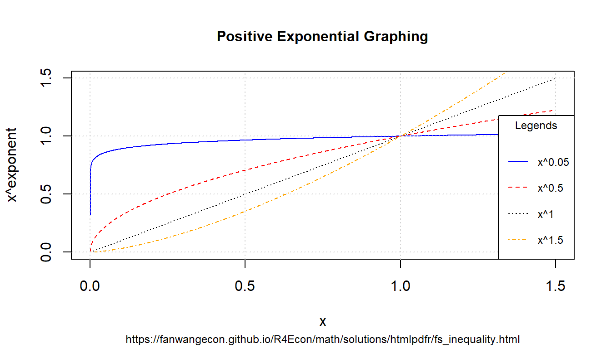

Chapter 8 Mathematics
8.1 Basics
8.1.1 Polynomial Formulas for Points
Go back to fan’s REconTools research support package, R4Econ examples page, PkgTestR packaging guide, or Stat4Econ course page.
8.1.1.1 Formulas for Quadratic Parameters and Three Points
There are three points defined by their x and y coordinates, find a curve that fits through them exactly.
First, we have three equations with three unknowns, \(A\), \(B\), and \(C\).
\[ \begin{aligned} y_1 &= A + B \cdot x_1 + C \cdot x_1^2\\ y_2 &= A + B \cdot x_2 + C \cdot x_2^2\\ y_3 &= A + B \cdot x_3 + C \cdot x_3^2\\ \end{aligned} \]
Second, we rewrite the problem in matrix form.
\[ \begin{aligned} \begin{bmatrix} 1 & x_1 & x_1^2 \\ 1 & x_2 & x_2^2 \\ 1 & x_3 & x_3^2 \\ \end{bmatrix} \cdot \begin{bmatrix} A \\ B \\ C \end{bmatrix} & = \begin{bmatrix} y_1 \\ y_2 \\ y_3 \end{bmatrix}\\ \end{aligned} \]
Third, we solve the system of equations for the unknown vector \([A,B,C]\), via elementary row operations. The code below uses matlab to arrive at symbolic analytical solutions for for \([A,B,C]\).
clc
clear
% Define inputs
syms x11 x12 x21 x22 x31 x32 y1 y2 y3
mt_sm_z = [1,x11,x12;1,x21,x22;1,x31,x32];
ar_sm_y = [y1;y2;y3];
% Solve analytically
ar_sm_solu = linsolve(mt_sm_z, ar_sm_y)
% Randomly draw x and y values
rng(1234);
mt_rand = rand(3,2);
mt_rand = [0.1915, 0.6221, 0.4377;
0.7854, 0.7800, 0.2726]';
[fl_x1, fl_x2, fl_x3] = deal(mt_rand(1,1), mt_rand(2,1), mt_rand(3,1));
[fl_y1, fl_y2, fl_y3] = deal(mt_rand(1,2), mt_rand(2,2), mt_rand(3,2));
[fl_x11, fl_x21, fl_x31] = deal(fl_x1, fl_x2, fl_x3);
[fl_x12, fl_x22, fl_x32] = deal(fl_x1^2, fl_x2^2, fl_x3^2);
% Numerically evaluate coefficients
ar_fl_solu = double(subs(ar_sm_solu, ...
{x11, x12, x21, x22, x31, x32, y1, y2, y3}, ...
{fl_x11,fl_x12,fl_x21,fl_x22,fl_x31,fl_x32,fl_y1,fl_y2,fl_y3}));
disp(['ar_fl_solu=', num2str(ar_fl_solu')])
% Y predictions
mt_fl_z = [1,fl_x11,fl_x12;1,fl_x21,fl_x22;1,fl_x31,fl_x32];
ar_fl_y_pred = mt_fl_z*ar_fl_solu;
ar_fl_x_actual = [fl_x1;fl_x2;fl_x3];
ar_fl_y_actual = [fl_y1;fl_y2;fl_y3];
% Compare results
tb_test = array2table([ar_fl_x_actual';ar_fl_y_actual';ar_fl_y_pred']');
cl_col_names = ["x_actual","y_actual", "y_predict"];
cl_row_names = strcat('obs_', string((1:3)));
tb_test.Properties.VariableNames = matlab.lang.makeValidName(cl_col_names);
tb_test.Properties.RowNames = matlab.lang.makeValidName(cl_row_names);
display(tb_test);Fourth, the solutions are as follows.
\[ A = \frac{x_1 x_2^2 y_3 - x_1^2 x_2 y_3 - x_1 x_3^2 y_2 + x_1^2 x_3 y_2 + x_2 x_3^2 y_1 - x_2^2 x_3 y_1}{x_1 x_2^2 - x_1^2 x_2 - x_1 x_3^2 + x_1^2 x_3 + x_2 x_3^2 - x_2^2 x_3} \]
\[ B = \frac{-\left(x_1^2 y_2 - x_1^2 y_3 - x_2^2 y_1 + x_2^2 y_3 + x_3^2 y_1 - x_3^2 y_2\right)}{x_1 x_2^2 - x_1^2 x_2 - x_1 x_3^2 + x_1^2 x_3 + x_2 x_3^2 - x_2^2 x_3} \]
\[ C = \frac{x_1 y_2 - x_1 y_3 - x_2 y_1 + x_2 y_3 + x_3 y_1 - x_3 y_2}{x_1 x_2^2 - x_1^2 x_2 - x_1 x_3^2 + x_1^2 x_3 + x_2 x_3^2 - x_2^2 x_3} \]
Fifth, given three pairs randomly drawn x and y points, we use the formulas just derived to find the parameters for the quadratic polynomial.
# Inputs X and Y
set.seed(123)
# Draw Randomly
mt_rnorm <- matrix(rnorm(6, mean = 1, sd = 1), nrow = 3, ncol = 2)
# # Fixed Values
# mt_rnorm <- matrix(c(
# 0.1915, 0.6221, 0.4377,
# 0.7854, 0.7800, 0.2726
# ), nrow = 3, ncol = 2)
colnames(mt_rnorm) <- c("x", "y")
x1 <- mt_rnorm[1, 1]
x2 <- mt_rnorm[2, 1]
x3 <- mt_rnorm[3, 1]
y1 <- mt_rnorm[1, 2]
y2 <- mt_rnorm[2, 2]
y3 <- mt_rnorm[3, 2]
# X quadratic
x11 <- x1
x12 <- x1**2
x21 <- x2
x22 <- x2**2
x31 <- x3
x32 <- x3**2
# Shared denominator
fl_denominator <- (x11 * x22 - x12 * x21
- x11 * x32 + x12 * x31
+ x21 * x32 - x22 * x31)
# Solve for A, B, and C exact fit quadratic coefficients
fl_A <- (x11 * x22 * y3 - x12 * x21 * y3
- x11 * x32 * y2 + x12 * x31 * y2
+ x21 * x32 * y1 - x22 * x31 * y1) / fl_denominator
fl_B <- -(x12 * y2 - x12 * y3
- x22 * y1 + x22 * y3
+ x32 * y1 - x32 * y2) / fl_denominator
fl_C <- (x11 * y2 - x11 * y3
- x21 * y1 + x21 * y3
+ x31 * y1 - x31 * y2) / fl_denominator
# Display
st_display <- paste0(
"A(intercept)=", round(fl_A, 3),
", B(lin)=", round(fl_B, 3),
", C(quad)=", round(fl_C, 3)
)
print(st_display)## [1] "A(intercept)=1.105, B(lin)=-0.226, C(quad)=0.334"Sixth, to check that the estimates are correct, we derive results from running quadratic estimation with the three points of data drawn. We use both polynomial and orthogonal polynomials below.
# Estimation results
df_rnorm <- as_tibble(mt_rnorm)
# Linear and quadratic terms
rs_lm_quad <- stats::lm(y ~ x + I(x^2), data = df_rnorm)
print(stats::summary.lm(rs_lm_quad))##
## Call:
## stats::lm(formula = y ~ x + I(x^2), data = df_rnorm)
##
## Residuals:
## ALL 3 residuals are 0: no residual degrees of freedom!
##
## Coefficients:
## Estimate Std. Error t value Pr(>|t|)
## (Intercept) 1.1054 NaN NaN NaN
## x -0.2264 NaN NaN NaN
## I(x^2) 0.3343 NaN NaN NaN
##
## Residual standard error: NaN on 0 degrees of freedom
## Multiple R-squared: 1, Adjusted R-squared: NaN
## F-statistic: NaN on 2 and 0 DF, p-value: NA# Using orthogonal polynomials
# vs. rs_lm_quad: different parameters, but same predictions
rs_lm_quad_otho <- stats::lm(y ~ poly(x, 2), data = df_rnorm)
print(stats::summary.lm(rs_lm_quad_otho))##
## Call:
## stats::lm(formula = y ~ poly(x, 2), data = df_rnorm)
##
## Residuals:
## ALL 3 residuals are 0: no residual degrees of freedom!
##
## Coefficients:
## Estimate Std. Error t value Pr(>|t|)
## (Intercept) 1.6383 NaN NaN NaN
## poly(x, 2)1 1.3109 NaN NaN NaN
## poly(x, 2)2 0.1499 NaN NaN NaN
##
## Residual standard error: NaN on 0 degrees of freedom
## Multiple R-squared: 1, Adjusted R-squared: NaN
## F-statistic: NaN on 2 and 0 DF, p-value: NASeventh, now we compare between the predications based on analytical solutions and lm regression.
# Matrix of input values
mt_vals_xs <- t(
matrix(c(1, x1, x1**2, 1, x2, x2**2, 1, x3, x3**2),
nrow = 3, ncol = 3
)
)
# Predictions from LM poly prediction
ar_pred_lm <- mt_vals_xs %*% as.numeric(rs_lm_quad$coefficients)
as_pred_lm_otho <- stats::predict(rs_lm_quad_otho)
# Predictions based on analytical solutions
ar_pred_sym <- mt_vals_xs %*% c(fl_A, fl_B, fl_C)
# Combine results
kable(
cbind(
df_rnorm, ar_pred_sym,
ar_pred_lm, as_pred_lm_otho
) %>%
mutate(res = ar_pred_lm - y),
caption = paste0(
"Quadratic Fit of 3 Sets of Random (X,Y) Points"
)
) %>% kable_styling_fc()| x | y | ar_pred_sym | ar_pred_lm | as_pred_lm_otho | res |
|---|---|---|---|---|---|
| 0.4395244 | 1.070508 | 1.070508 | 1.070508 | 1.070508 | 0 |
| 0.7698225 | 1.129288 | 1.129288 | 1.129288 | 1.129288 | 0 |
| 2.5587083 | 2.715065 | 2.715065 | 2.715065 | 2.715065 | 0 |
8.1.1.2 Formulas for Quadratic Parameters and Differences
Similar to the prior example, we remain interested in quadratic parameters, however, we no longer observe three sets of \(x\) and \(y\) values, instead, we observe differences in the \(y\) values. Specifically, we observe \(\Delta y_2\) and \(\Delta y_3\), not \(y_3\), \(y_2\), and \(y_1\). We do still observe \(x_1\), \(x_2\), and \(x_3\). We can no longer identify \(A\), but we can still identify \(B\) and \(C\).
\[ \begin{aligned} y_2 - y_1 = \Delta y_2 &= B \cdot ( x_2 - x_1 ) + C \cdot ( x_2^2 - x_1^2) \\ y_3 - y_2 = \Delta y_3 &= B \cdot ( x_3 - x_2 ) + C \cdot ( x_3^2 - x_2^2) \\ \end{aligned} \]
First, we rewrite the problem in matrix form.
\[ \begin{aligned} \begin{bmatrix} \underbrace{ x_2 - x_1 }_{T} & \underbrace{ x_2^2 - x_1^2}_{U} \\ \underbrace{ x_3 - x_2 }_{V} & \underbrace{ x_3^2 - x_2^2}_{W} \\ \end{bmatrix} \cdot \begin{bmatrix} B \\ C \end{bmatrix} & = \begin{bmatrix} \underbrace{y_2 - y_1}_{R} \\ \underbrace{y_3 - y_2}_{S} \end{bmatrix}\\ \end{aligned} \]
Second, we solve the system of equations for the unknown vector \([B,C]\), via elementary row operations. The code below uses matlab to arrive at symbolic analytical solutions for for \([B,C]\). Derivations of the solutions are also shown here: Reduced Row Echelon Form with 2 Equations and 2 Unknowns.
clc
clear
% Define inputs
syms T U V W R S
mt_sm_z = [T, U; V, W];
ar_sm_y = [R; S];
% Solve analytically
ar_sm_solu = linsolve(mt_sm_z, ar_sm_y)
% Randomly draw x and y values
rng(1234);
mt_rand = rand(3,2);
% Use below to check not-exact fit, gap actual and predict of y
mt_rand = [0.1915, 0.6221, 0.4377;
0.7854, 0.7800, 0.2726]';
% Use below to check for exact fit 2nd 3rd points same
% mt_rand = [0.1915, 0.6221, 0.6221;
% 0.7854, 0.7800, 0.7800]';
[fl_x1, fl_x2, fl_x3] = deal(mt_rand(1,1), mt_rand(2,1), mt_rand(3,1));
[fl_y1, fl_y2, fl_y3] = deal(mt_rand(1,2), mt_rand(2,2), mt_rand(3,2));
[fl_x11, fl_x21, fl_x31] = deal(fl_x1, fl_x2, fl_x3);
[fl_x12, fl_x22, fl_x32] = deal(fl_x1^2, fl_x2^2, fl_x3^2);
% Define values of U V Q and S
fl_T = fl_x21 - fl_x11;
fl_U = fl_x22 - fl_x12;
fl_V = fl_x31 - fl_x21;
fl_W = fl_x32 - fl_x22;
fl_R = fl_y2 - fl_y1;
fl_S = fl_y3 - fl_y2;
% Numerically evaluate coefficients
ar_fl_solu = double(subs(ar_sm_solu, ...
{T, U, V, W, R, S}, ...
{fl_T, fl_U, fl_V, fl_W, fl_R, fl_S}));
disp(['ar_fl_solu=', num2str(ar_fl_solu')])
% Y difference predictions
mt_fl_z = [fl_T, fl_U;fl_V, fl_W];
ar_fl_y_diff_pred = mt_fl_z*ar_fl_solu;
ar_fl_x_diff_actual = [fl_T;fl_V];
ar_fl_x_sqr_diff_actual = [fl_U;fl_W];
ar_fl_y_diff_actual = [fl_R;fl_S];
% Compare results
tb_test = array2table( ...
[ar_fl_x_diff_actual'; ar_fl_x_sqr_diff_actual'; ...
ar_fl_y_diff_actual'; ar_fl_y_diff_pred']');
cl_col_names = ["x_diff_actual", "x_sqr_diff_actual", ...
"y_diff_actual", "y_diff_predict"];
cl_row_names = strcat('diff_obs_', string((1:2)));
tb_test.Properties.VariableNames = matlab.lang.makeValidName(cl_col_names);
tb_test.Properties.RowNames = matlab.lang.makeValidName(cl_row_names);
display(tb_test);Third, the solutions for the intercept and quadratic terms based on differences in \(y\) values and based on functions of the all \(x\) values are as follows.
\[ \begin{aligned} B &= \frac{R W - S U}{ T W - U V}\\ &= \frac{ \left( y_2 - y_1 \right) \cdot\left( x_3^2 - x_2^2 \right) - \left( y_3 - y_2 \right) \cdot\left( x_2^2 - x_1^2 \right) }{ \left( x_2 - x_1 \right) \cdot\left( x_3^2 - x_2^2 \right) - \left( x_2^2 - x_1^2 \right) \cdot\left( x_3 - x_2 \right) }\\ &\\ C &= \frac{S T - R V}{ T W - U V}\\ &= \frac{ \left( y_3 - y_2 \right) \cdot\left( x_2 - x_1 \right) - \left( y_2 - y_1 \right) \cdot\left( x_3 - x_2 \right) }{ \left( x_2 - x_1 \right) \cdot\left( x_3^2 - x_2^2 \right) - \left( x_2^2 - x_1^2 \right) \cdot\left( x_3 - x_2 \right) } \end{aligned} \]
Fourth, given three pairs randomly drawn x and y points, we use the formulas just derived to find the parameters for the best-fitting slope and quadratic parameters given observed y differences.
# Inputs X and Y
set.seed(123)
# Draw Randomly
mt_rnorm <- matrix(rnorm(6, mean = 1, sd = 1), nrow = 3, ncol = 2)
# # Three fixed and different set of points
# mt_rnorm <- matrix(c(
# 0.1915, 0.6221, 0.4377,
# 0.7854, 0.7800, 0.2726
# ), nrow = 3, ncol = 2)
colnames(mt_rnorm) <- c("x", "y")
x1 <- mt_rnorm[1, 1]
x2 <- mt_rnorm[2, 1]
x3 <- mt_rnorm[3, 1]
y1 <- mt_rnorm[1, 2]
y2 <- mt_rnorm[2, 2]
y3 <- mt_rnorm[3, 2]
# X quadratic
x11 <- x1
x12 <- x1**2
x21 <- x2
x22 <- x2**2
x31 <- x3
x32 <- x3**2
# Define U and V, as well as Q and S
fl_T <- x21 - x11;
fl_U <- x22 - x12;
fl_V <- x31 - x21;
fl_W <- x32 - x22;
fl_R <- y2 - y1;
fl_S <- y3 - y2;
# Shared denominator
fl_denominator <- (fl_T*fl_W - fl_U*fl_V)
# Solve for A and B coefficients (not exact fit)
fl_B <- (fl_R * fl_W - fl_S * fl_U) / fl_denominator
fl_C <- (fl_S * fl_T - fl_R * fl_V) / fl_denominator
# Display
st_display <- paste0(
"B(lin)=", round(fl_B, 3),
", C(quad)=", round(fl_C, 3)
)
print(st_display)## [1] "B(lin)=-0.226, C(quad)=0.334"Fifth, to check that the estimates are correct, we derive results from running linear estimation with the three points of data drawn, using all level information. As prior, we use both polynomial and orthogonal polynomials below. Note that we can not run this regression in practice because we do not observe levels, just differences.
# Estimation results
df_rnorm <- as_tibble(mt_rnorm)
# Linear and quadratic terms
rs_lm_quad <- stats::lm(y ~ x + I(x^2), data = df_rnorm)
print(stats::summary.lm(rs_lm_quad))##
## Call:
## stats::lm(formula = y ~ x + I(x^2), data = df_rnorm)
##
## Residuals:
## ALL 3 residuals are 0: no residual degrees of freedom!
##
## Coefficients:
## Estimate Std. Error t value Pr(>|t|)
## (Intercept) 1.1054 NaN NaN NaN
## x -0.2264 NaN NaN NaN
## I(x^2) 0.3343 NaN NaN NaN
##
## Residual standard error: NaN on 0 degrees of freedom
## Multiple R-squared: 1, Adjusted R-squared: NaN
## F-statistic: NaN on 2 and 0 DF, p-value: NA# Using orthogonal polynomials
# vs. rs_lm_quad: different parameters, but same predictions
rs_lm_quad_otho <- stats::lm(y ~ poly(x, 2), data = df_rnorm)
print(stats::summary.lm(rs_lm_quad_otho))##
## Call:
## stats::lm(formula = y ~ poly(x, 2), data = df_rnorm)
##
## Residuals:
## ALL 3 residuals are 0: no residual degrees of freedom!
##
## Coefficients:
## Estimate Std. Error t value Pr(>|t|)
## (Intercept) 1.6383 NaN NaN NaN
## poly(x, 2)1 1.3109 NaN NaN NaN
## poly(x, 2)2 0.1499 NaN NaN NaN
##
## Residual standard error: NaN on 0 degrees of freedom
## Multiple R-squared: 1, Adjusted R-squared: NaN
## F-statistic: NaN on 2 and 0 DF, p-value: NASixth, now we compare between the predications based on analytical solutions using differences in \(y\), and lm regression. The fit of differences in \(y\) are exact.
# Matrix of input values
mt_vals_xs <- t(
matrix(c(x2 - x1, x2^2 - x1^2, x3 - x2, x3^2 - x2^2),
nrow = 2, ncol = 2
)
)
# Predictions from LM poly prediction
ar_pred_lm <- mt_vals_xs %*% as.vector(rs_lm_quad$coefficients)[2:3]
as_pred_lm_otho_lvl <- stats::predict(rs_lm_quad_otho)
as_pred_lm_otho <- t(t(diff(as_pred_lm_otho_lvl)))
# Predictions based on analytical solutions
ar_pred_sym <- mt_vals_xs %*% c(fl_B, fl_C)
# Combine results
kable(
cbind(
as_tibble(apply(df_rnorm, 2, diff)), ar_pred_sym,
ar_pred_lm, as_pred_lm_otho
) %>%
mutate(res = ar_pred_lm - y),
caption = paste0(
"Quadratic Fit, given 3 Sets of Random (X,Y) Points' Differences in Y"
)
) %>% kable_styling_fc()| x | y | ar_pred_sym | ar_pred_lm | as_pred_lm_otho | res | |
|---|---|---|---|---|---|---|
| 2 | 0.3302982 | 0.0587793 | 0.0587793 | 0.0587793 | 0.0587793 | 0 |
| 3 | 1.7888858 | 1.5857773 | 1.5857773 | 1.5857773 | 1.5857773 | 0 |
8.1.1.3 Formulas for Linear Fit with Three Points
We have three points, what are the optimizing intercept and slope parameters? We solve the following problem to minimize the sum-squared error given linear fit with the three points.
First, the minimizing objective function is:
\[ O(A,B) = \left\{ \left( y_1 - A - B x_1 \right)^2 + \left( y_2 - A - B x_2 \right)^2 + \left( y_3 - A - B x_3 \right)^2 \right\} \]
Second, we solve for \(min_{A,B} O(A,B)\). We take derivative of \(O(A,B)\) with respect to \(A\) and \(B\):
\[ \begin{aligned} \frac{\partial O}{\partial A} &= - \left( y_1 - A - B x_1 \right) - \left( y_2 - A - B x_2 \right) - \left( y_3 - A - B x_3 \right)\\ &= A + B x_1 - y_1 + A + B x_2 - y_2 + A + B x_3 - y_3\\ &= 3 A + \left(x_1 + x_2 + x_3\right) B - \left(y_1 + y_2 + y_3\right)\\ \end{aligned} \]
\[ \begin{aligned} \frac{\partial O}{\partial B} &= - x_1 \left( y_1 - A - B x_1 \right) - x_2 \left( y_2 - A - B x_2 \right) - x_3 \left( y_3 - A - B x_3 \right)\\ &= \left(x_1 + x_2 + x_3\right) A + \left(x_1^2 + x_2^2 + x_3^2\right) B - \left(x_1 y_1 + x_2 y_2 + x_3 y_3\right)\\ \end{aligned} \]
Third, at the optimizing minimum (note quadratic), we now have two equations with two unknowns:
\[ \begin{aligned} \left(y_1 + y_2 + y_3\right) &= 3 A + \left(x_1 + x_2 + x_3\right) B\\ \left(x_1 y_1 + x_2 y_2 + x_3 y_3\right) &= \left(x_1 + x_2 + x_3\right) A + \left(x_1^2 + x_2^2 + x_3^2\right) B \\ \end{aligned} \]
Fourth, we rewrite the problem in matrix form.
\[ \begin{aligned} \begin{bmatrix} 3 & \underbrace{x_1 + x_2 + x_3}_{U} \\ \underbrace{x_1 + x_2 + x_3}_{U} & \underbrace{x_1^2 + x_2^2 + x_3^2}_{V} \\ \end{bmatrix} \cdot \begin{bmatrix} A \\ B \end{bmatrix} & = \begin{bmatrix} \underbrace{y_1 + y_2 + y_3}_{Q} \\ \underbrace{x_1 y_1 + x_2 y_2 + x_3 y_3}_{S} \end{bmatrix}\\ \end{aligned} \]
Fifth, we solve the system of equations for the unknown vector \([A,B]\), via elementary row operations. The code below uses matlab to arrive at symbolic analytical solutions for for \([A,B]\).
clc
clear
% Define inputs
syms U V Q S
mt_sm_z = [3, U; U, V];
ar_sm_y = [Q; S];
% Solve analytically
ar_sm_solu = linsolve(mt_sm_z, ar_sm_y)
% Randomly draw x and y values
rng(1234);
mt_rand = rand(3,2);
% Use below to check not-exact fit, gap actual and predict of y
mt_rand = [0.1915, 0.6221, 0.4377;
0.7854, 0.7800, 0.2726]';
% Use below to check for exact fit 2nd 3rd points same
% mt_rand = [0.1915, 0.6221, 0.6221;
% 0.7854, 0.7800, 0.7800]';
[fl_x1, fl_x2, fl_x3] = deal(mt_rand(1,1), mt_rand(2,1), mt_rand(3,1));
[fl_y1, fl_y2, fl_y3] = deal(mt_rand(1,2), mt_rand(2,2), mt_rand(3,2));
[fl_x11, fl_x21, fl_x31] = deal(fl_x1, fl_x2, fl_x3);
[fl_x12, fl_x22, fl_x32] = deal(fl_x1^2, fl_x2^2, fl_x3^2);
% Define values of U V Q and S
fl_U = fl_x11 + fl_x21 + fl_x31;
fl_V = fl_x12 + fl_x22 + fl_x32;
fl_Q = fl_y1 + fl_y2 + fl_y3;
fl_S = fl_y1*fl_x11 + fl_y2*fl_x21 + fl_y3*fl_x31;
% Numerically evaluate coefficients
ar_fl_solu = double(subs(ar_sm_solu, ...
{U, V, Q, S}, ...
{fl_U, fl_V, fl_Q, fl_S}));
disp(['ar_fl_solu=', num2str(ar_fl_solu')])
% Y predictions
mt_fl_z = [1,fl_x11;1,fl_x21;1,fl_x31];
ar_fl_y_pred = mt_fl_z*ar_fl_solu;
ar_fl_x_actual = [fl_x1;fl_x2;fl_x3];
ar_fl_y_actual = [fl_y1;fl_y2;fl_y3];
% Compare results
tb_test = array2table([ar_fl_x_actual';ar_fl_y_actual';ar_fl_y_pred']');
cl_col_names = ["x_actual","y_actual", "y_predict"];
cl_row_names = strcat('obs_', string((1:3)));
tb_test.Properties.VariableNames = matlab.lang.makeValidName(cl_col_names);
tb_test.Properties.RowNames = matlab.lang.makeValidName(cl_row_names);
display(tb_test);Sixth, the solutions are as follows.
\[ \begin{aligned} A &= \frac{Q V - S U}{- U^2 + 3 V}\\ &= \frac{ \left(y_1 + y_2 + y_3\right) \cdot \left(x_1^2 + x_2^2 + x_3^2\right) - \left(x_1 y_1 + x_2 y_2 + x_3 y_3\right) \cdot \left(x_1 + x_2 + x_3\right) }{ 3\cdot \left(x_1^2 + x_2^2 + x_3^2\right) - \left(x_1 + x_2 + x_3\right)^2 }\\ &\\ B &= \frac{3 S - Q U}{- U^2 + 3 V}\\ &= \frac{ 3 \left(x_1 y_1 + x_2 y_2 + x_3 y_3\right) - \left(y_1 + y_2 + y_3\right) \cdot \left(x_1 + x_2 + x_3\right) }{ 3\cdot \left(x_1^2 + x_2^2 + x_3^2\right) - \left(x_1 + x_2 + x_3\right)^2 } \end{aligned} \]
Seventh, given three pairs randomly drawn x and y points, we use the formulas just derived to find the parameters for the best-fitting y-intercept and slope values.
# Inputs X and Y
set.seed(123)
# Draw Randomly
mt_rnorm <- matrix(rnorm(6, mean = 1, sd = 1), nrow = 3, ncol = 2)
# # Three fixed and different set of points
# mt_rnorm <- matrix(c(
# 0.1915, 0.6221, 0.4377,
# 0.7854, 0.7800, 0.2726
# ), nrow = 3, ncol = 2)
# # Below, the 2nd and 3rd points are the same
# mt_rnorm <- matrix(c(
# 0.1915, 0.6221, 0.6221,
# 0.7854, 0.7800, 0.7800
# ), nrow = 3, ncol = 2)
colnames(mt_rnorm) <- c("x", "y")
x1 <- mt_rnorm[1, 1]
x2 <- mt_rnorm[2, 1]
x3 <- mt_rnorm[3, 1]
y1 <- mt_rnorm[1, 2]
y2 <- mt_rnorm[2, 2]
y3 <- mt_rnorm[3, 2]
# X quadratic
x11 <- x1
x12 <- x1**2
x21 <- x2
x22 <- x2**2
x31 <- x3
x32 <- x3**2
# Define U and V, as well as Q and S
fl_U <- x11 + x21 + x31
fl_V <- x12 + x22 + x32
fl_Q <- y1 + y2 + y3
fl_S <- x11*y1 + x21*y2 + x31*y3
# Shared denominator
fl_denominator <- (3*fl_V - fl_U^2)
# Solve for A and B coefficients (not exact fit)
fl_A <- (fl_Q * fl_V - fl_S * fl_U) / fl_denominator
fl_B <- (3 * fl_S - fl_Q * fl_U) / fl_denominator
# Display
st_display <- paste0(
"A(intercept)=", round(fl_A, 3),
", B(lin)=", round(fl_B, 3)
)
print(st_display)## [1] "A(intercept)=0.617, B(lin)=0.813"Eighth, to check that the estimates are correct, we derive results from running linear estimation with the three points of data drawn. We use both polynomial and orthogonal polynomials below.
# Estimation results
df_rnorm <- as_tibble(mt_rnorm)
# Linear and quadratic terms
rs_lm_quad <- stats::lm(y ~ x, data = df_rnorm)
print(stats::summary.lm(rs_lm_quad))##
## Call:
## stats::lm(formula = y ~ x, data = df_rnorm)
##
## Residuals:
## 1 2 3
## 0.09601 -0.11374 0.01773
##
## Coefficients:
## Estimate Std. Error t value Pr(>|t|)
## (Intercept) 0.61718 0.14533 4.247 0.1472
## x 0.81297 0.09296 8.746 0.0725 .
## ---
## Signif. codes: 0 '***' 0.001 '**' 0.01 '*' 0.05 '.' 0.1 ' ' 1
##
## Residual standard error: 0.1499 on 1 degrees of freedom
## Multiple R-squared: 0.9871, Adjusted R-squared: 0.9742
## F-statistic: 76.48 on 1 and 1 DF, p-value: 0.07248# Using orthogonal polynomials
# vs. rs_lm_quad: different parameters, but same predictions
rs_lm_quad_otho <- stats::lm(y ~ poly(x, 1), data = df_rnorm)
print(stats::summary.lm(rs_lm_quad_otho))##
## Call:
## stats::lm(formula = y ~ poly(x, 1), data = df_rnorm)
##
## Residuals:
## 1 2 3
## 0.09601 -0.11374 0.01773
##
## Coefficients:
## Estimate Std. Error t value Pr(>|t|)
## (Intercept) 1.63829 0.08654 18.931 0.0336 *
## poly(x, 1) 1.31089 0.14989 8.746 0.0725 .
## ---
## Signif. codes: 0 '***' 0.001 '**' 0.01 '*' 0.05 '.' 0.1 ' ' 1
##
## Residual standard error: 0.1499 on 1 degrees of freedom
## Multiple R-squared: 0.9871, Adjusted R-squared: 0.9742
## F-statistic: 76.48 on 1 and 1 DF, p-value: 0.07248Ninth, now we compare between the predications based on analytical solutions and lm regression. Again, note that the fit is not exact.
# Matrix of input values
mt_vals_xs <- t(
matrix(c(1, x1, 1, x2, 1, x3),
nrow = 2, ncol = 3
)
)
# Predictions from LM poly prediction
ar_pred_lm <- mt_vals_xs %*% as.vector(rs_lm_quad$coefficients)
as_pred_lm_otho <- stats::predict(rs_lm_quad_otho)
# Predictions based on analytical solutions
ar_pred_sym <- mt_vals_xs %*% c(fl_A, fl_B)
# Combine results
kable(
cbind(
df_rnorm, ar_pred_sym,
ar_pred_lm, as_pred_lm_otho
) %>%
mutate(res = ar_pred_lm - y),
caption = paste0(
"Linear Fit of 3 Sets of Random (X,Y) Points"
)
) %>% kable_styling_fc()| x | y | ar_pred_sym | ar_pred_lm | as_pred_lm_otho | res |
|---|---|---|---|---|---|
| 0.4395244 | 1.070508 | 0.9744999 | 0.9744999 | 0.9744999 | -0.0960085 |
| 0.7698225 | 1.129288 | 1.2430232 | 1.2430232 | 1.2430232 | 0.1137354 |
| 2.5587083 | 2.715065 | 2.6973381 | 2.6973381 | 2.6973381 | -0.0177269 |
8.1.2 Rescale a Parameter with Fixed Min and Max
Go back to fan’s REconTools research support package, R4Econ examples page, PkgTestR packaging guide, or Stat4Econ course page.
8.1.2.1 Rescale a Fraction Between \(0\) and \(1\)
We have ratio \(0<\theta<1\), we want to multiply \(\theta\) to get closer to 0 or to 1, but to not exceed the bounds of \(0\) and \(1\). This is achieved by the following \(\widehat{\theta}\left(\theta, \lambda\right)\) function, where we adjust \(\lambda\) between negative and positive infinities to move \(\theta\) closer to \(0\) (as \(\lambda\rightarrow-\infty\)) or \(\theta\) closer to \(1\) (as \(\lambda\rightarrow\infty\)).
\[ \widehat{\theta}\left(\theta, \lambda\right)= \theta \cdot \left( \frac{ \exp\left(\lambda\right) }{ 1 + \theta\cdot\left(\exp\left(\lambda\right) - 1\right) } \right) \]
Given this function form, when \(\lambda=0\), we are back to \(\theta\), and \(0 \le \widehat{\theta}\left(\lambda\right) \le 1\), which allows \(\widehat{\theta}\) to be used as the “chance of success†parameter as we freely vary \(\lambda\).
\[ \begin{aligned} \widehat{\theta}\left(\theta, \lambda=0\right) &= \theta \cdot \left(\frac{1}{1 + \theta\cdot(1-1)}\right) = \theta \\ \lim_{\lambda \rightarrow -\infty} \widehat{\theta}\left(\theta, \lambda\right) &= \theta \cdot \left(\frac{0}{1 + \theta\cdot(0-1)}\right) = 0 \\ \lim_{\lambda \rightarrow \infty} \widehat{\theta}\left(\theta, \lambda\right) &= \theta \cdot \left(\frac{\exp(\lambda)}{\theta \cdot \exp(\lambda)}\right) = 1 \\ \end{aligned} \]
To test this, first, we write out the rescaling function.
# Construct the formula
ffi_theta_lambda_0t1 <- function(theta, lambda) {
if (is.finite(exp(lambda))) {
theta * (exp(lambda) / (1 + theta * (exp(lambda) - 1)))
} else {
# If lambda is large, exp(lambda)=inf, ratio above becomes 1
1
}
}
# Test the function
print(ffi_theta_lambda_0t1(0.5, 1e1))## [1] 0.9999546## [1] 1## [1] 0Second, given theta, we evaluate the function with differing lambda values.
# Create Function
ffi_fixtheta_varylambda_0t1 <-
function(ar_lambda_pos =
1e1^(seq(-0.1, 1, length.out = 4)),
theta = 0.5) {
# Construct lambda vector
ar_lambda <- sort(unique((c(-ar_lambda_pos, 0, ar_lambda_pos))))
# sapply
ar_theta_hat <- sapply(ar_lambda, ffi_theta_lambda_0t1, theta = theta)
# Create table
ar_st_varnames <- c("theta_hat", "lambda")
tb_theta_hat_lambda <- as_tibble(
cbind(round(ar_theta_hat, 5), ar_lambda)
) %>%
rename_all(~ c(ar_st_varnames)) %>%
mutate(theta = theta)
# return
return(tb_theta_hat_lambda)
}
# Test function
tb_theta_hat_lambda <- ffi_fixtheta_varylambda_0t1()
# Print
kable(tb_theta_hat_lambda,
caption = paste(
"Theta-hat rescaling",
", given different lambda rescalers.",
separator = " "
)
) %>% kable_styling_fc()| theta_hat | lambda | theta |
|---|---|---|
| 0.00005 | -10.0000000 | 0.5 |
| 0.01340 | -4.2986623 | 0.5 |
| 0.13613 | -1.8478498 | 0.5 |
| 0.31124 | -0.7943282 | 0.5 |
| 0.50000 | 0.0000000 | 0.5 |
| 0.68876 | 0.7943282 | 0.5 |
| 0.86387 | 1.8478498 | 0.5 |
| 0.98660 | 4.2986623 | 0.5 |
| 0.99995 | 10.0000000 | 0.5 |
Third, we run the function we just created for two three different \(\theta\) levels, and we stack the results together.
# Evaluate at differing thetas
ar_lambda_pos <- 1e1^(seq(-0.1, 1, length.out = 2))
tb_theta_hat_lambda_low <- ffi_fixtheta_varylambda_0t1(ar_lambda_pos, 0.1)
tb_theta_hat_lambda_mid <- ffi_fixtheta_varylambda_0t1(ar_lambda_pos, 0.5)
tb_theta_hat_lambda_hgh <- ffi_fixtheta_varylambda_0t1(ar_lambda_pos, 0.9)
# Combine
tb_theta_hat_lambda_combo <- bind_rows(
tb_theta_hat_lambda_low,
tb_theta_hat_lambda_mid,
tb_theta_hat_lambda_hgh
)
# Print
kable(tb_theta_hat_lambda_combo,
caption = paste(
"Theta-hat rescaling",
", with multiple theta values",
", given different lambda rescalers.",
separator = " "
)
) %>% kable_styling_fc()| theta_hat | lambda | theta |
|---|---|---|
| 0.00001 | -10.0000000 | 0.1 |
| 0.04781 | -0.7943282 | 0.1 |
| 0.10000 | 0.0000000 | 0.1 |
| 0.19736 | 0.7943282 | 0.1 |
| 0.99959 | 10.0000000 | 0.1 |
| 0.00005 | -10.0000000 | 0.5 |
| 0.31124 | -0.7943282 | 0.5 |
| 0.50000 | 0.0000000 | 0.5 |
| 0.68876 | 0.7943282 | 0.5 |
| 0.99995 | 10.0000000 | 0.5 |
| 0.00041 | -10.0000000 | 0.9 |
| 0.80264 | -0.7943282 | 0.9 |
| 0.90000 | 0.0000000 | 0.9 |
| 0.95219 | 0.7943282 | 0.9 |
| 0.99999 | 10.0000000 | 0.9 |
Fourth, we visualize the results from above. We generate a denser x-grid for this purpose, and we evaluate at 9 different theta values from \(\theta=0.01\) to \(\theta=0.99\). We can see in the graph that all \(0<\hat{\theta}<1\).
# Generate a denser result
ar_lambda_pos <- 1e1^(seq(-0.1, 1, length.out = 100))
tb_theta_hat_lambda_combo <- bind_rows(
ffi_fixtheta_varylambda_0t1(ar_lambda_pos, 0.01),
ffi_fixtheta_varylambda_0t1(ar_lambda_pos, 0.10),
ffi_fixtheta_varylambda_0t1(ar_lambda_pos, 0.25),
ffi_fixtheta_varylambda_0t1(ar_lambda_pos, 0.50),
ffi_fixtheta_varylambda_0t1(ar_lambda_pos, 0.75),
ffi_fixtheta_varylambda_0t1(ar_lambda_pos, 0.90),
ffi_fixtheta_varylambda_0t1(ar_lambda_pos, 0.99)
)
# Labeling
st_title <- paste0("Rescale a Fraction (theta), Constrained Between 0 and 1")
st_subtitle <- paste0(
"Note that when LAMBDA = 0, THETA-HAT = theta."
)
st_caption <- paste0(
"https://fanwangecon.github.io/",
"R4Econ/math/solutions/htmlpdfr/fs_rescale.html"
)
st_x_label <- "Different rescaling LAMBDA values"
st_y_label <- "Rescaled THETA-HAT values between 0 and 1"
ar_y_breaks <- c(0.01, 0.10, 0.25, 0.50, 0.75, 0.90, 0.99)
# Graph
tb_theta_hat_lambda_combo %>%
mutate(theta = as.factor(theta)) %>%
ggplot(aes(
x = lambda, y = theta_hat,
color = theta, linetype = theta
)) +
geom_line(size = 2) +
geom_vline(
xintercept = 0,
linetype = "dashed", color = "black", size = 1
) +
labs(
title = st_title,
subtitle = st_subtitle,
x = st_x_label,
y = st_y_label,
caption = st_caption
) +
scale_y_continuous(
breaks = ar_y_breaks,
limits = c(0, 1)
) +
theme(
panel.grid.major.y = element_line(
color = "black",
size = 0.5,
linetype = 1
),
legend.key.width = unit(3, "line")
)8.1.2.2 Fit Three Points with Ends Along 45 Degree Line
Given e < x < f, use f(x) to rescale x, such that f(e)=e, f(f)=f, but f(z)=\(\alpha \cdot z\) for one particular z between e and f, with \(\alpha\) > 1. And in this case, assume that \(\alpha \cdot z < f\). Note that this is case where we have three points, and the starting and the ending points are along the 45 degree line.
We can fit these three points using the Quadratic function exactly. In another word, there is a unique quadratic function that crosses these three points. Note the quadratic function is either concave or convex through the entire domain.
First, as an example, suppose that \(e=0\), \(f=10\), \(z=2\), and \(\alpha=1.5\). Using a quadratic to fit:
\[ y(x) = a \cdot x^2 + b \cdot x + c \] We have three equations: \[ 0 = a \cdot 0 + b \cdot 0 + c\\ 2 \cdot 1.5 = a \cdot 2^2 + b \cdot 2 + c\\ 10 = a \cdot 10^2 + b \cdot 10 + c \] Given these, we have, \(c = 0\), and subsequently, 2 equations and 2 unknowns: \[ 3 = a \cdot 4 + b \cdot 2\\ 10 = a \cdot 100 + b \cdot 10 \]
Hence: \[ a = \frac{3-2b}{4}\\ 10 = \frac{3-2b}{4}\cdot 100 + b \cdot 10\\ 10 = 75 - 50b + 10b\\ \] And finally: \[ a = \frac{3-2*1.625}{4}=-0.0625\\ b = \frac{65}{40}=1.625\\ c = 0 \]
Generate the \(a\), \(b\) and \(c\) points above for the quadratic function:
# set values
e <- 0
f <- 10
z <- 2
alpha <- 1.5
# apply formulas from above
a <- -0.0625
b <- 1.625
c <- 0
# grid of values beween a and b, 11 points covering z = 2
ar_x <- seq(e, f, length.out = 11)
# rescale
ar_grid_quad <- a * ar_x^2 + b * ar_x + c
# show values
kable(print(as_tibble(cbind(ar_x, ar_grid_quad))),
caption = paste0(
"Quadratic Fit of Three Equations and Three Unknowns\n",
"Satisfies: f(0)=0, f(10)=10, f(2)=3"
)
) %>%
kable_styling_fc()| ar_x | ar_grid_quad |
|---|---|
| 0 | 0.0000 |
| 1 | 1.5625 |
| 2 | 3.0000 |
| 3 | 4.3125 |
| 4 | 5.5000 |
| 5 | 6.5625 |
| 6 | 7.5000 |
| 7 | 8.3125 |
| 8 | 9.0000 |
| 9 | 9.5625 |
| 10 | 10.0000 |
Second, as another example, suppose that \(e=0\), \(f=3.5\), \(z=0.5\), and \(\alpha=1.5\). Using a quadratic to fit these, we have three equations:
\[ 0 = a \cdot 0 + b \cdot 0 + c\\ 0.75 = a \cdot 0.5^2 + b \cdot 0.5 + c\\ 3.5 = a \cdot 3.5^2 + b \cdot 3.5 + c \] Given these, we have, \(c = 0\), and subsequently, 2 equations and 2 unknowns: \[ 0.75 = a \cdot 0.25 + b \cdot 0.5\\ 3.5 = a \cdot 12.25 + b \cdot 3.5 \]
Hence: \[ a = \frac{0.75-0.5b}{0.25}\\ 3.5 = \frac{0.75-0.5b}{0.25}\cdot 12.25 + b \cdot 3.5\\ 3.5 = 36.75 - 24.5b + 3.5b\\ \] And finally: \[ a = \frac{0.75-0.5*1.58333}{0.25}=-0.1666\\ b = \frac{36.75-3.5}{24.5-3.5}=1.58333\\ c = 0 \]
Generate the \(a\), \(b\) and \(c\) points above for the quadratic function:
# set values
e <- 0
f <- 3.5
z <- 0.5
alpha <- 1.5
# apply formulas from above
a <- -0.16666666
b <- 1.583333333
c <- 0
# grid of values beween a and b, 11 points covering z = 2
ar_x <- seq(e, f, length.out = 100000)
# rescale
ar_grid_quad <- a * ar_x^2 + b * ar_x + c
# show values
# cbind(ar_x, ar_grid_quad)
ar_x[which.min(abs(ar_grid_quad - 0.75))]## [1] 0.500015The exercises above are special cases of the formula we derive on this page: Formulas for Quadratic Parameters and Three Points.
8.1.3 Log with Different Bases and Exponents
Go back to fan’s REconTools research support package, R4Econ examples page, PkgTestR packaging guide, or Stat4Econ course page.
8.1.3.1 Log of Bases that Are not 10, 2 and e
What is \(y\) below, with arbitrary base \(x\)? It is \(y=\frac{\log\left(z\right)}{\log\left(x\right)}\), because: \[ \begin{aligned} x^y &= z\\ x^{\frac{\log\left(z\right)}{\log\left(x\right)}}&=z\\ \log\left(x^{\frac{\log\left(z\right)}{\log\left(x\right)}}\right)&=\log\left(z\right)\\ \frac{\log\left(z\right)}{\log\left(x\right)}\log\left(x\right)&=\log\left(z\right)\\ \frac{\log\left(z\right)}{\log\left(x\right)}&=\frac{\log\left(z\right)}{\log\left(x\right)}\\ \end{aligned} \]
Given these, we can compute the exponents, \(y\), for non-standard bases, \(x\), given the value for \(z\).
# base 1.1
x <- 1.1
y <- 5.5
z <- x^y
# given z and knowing x, and what is y?
y_solved <- log(z) / log(x)
# dispaly
print(paste0("y_solved=", y_solved, ", y=", y))## [1] "y_solved=5.5, y=5.5"8.1.3.2 Rescale Bounded Model Parameters to Unconstrained with Exponentiation
We have a parameter to be estimated, the parameter’s values can range between positive 1 and negative infinity. We want to use an estimator that us unconstrained. Use exponentiation to rescale the parameter so that is become unconstrained, use different bases so that the speed at which the parameter value approaches its bounds can be controlled.
While \(y\) is not bounded, \(f(y;x)\) is bounded: \[ \begin{aligned} &f(y; x) = 1 - x^{y}\\ &\text{where } x >1 \text{ and } -\infty < y < \infty\\ &\text{then, } 1 > f(y; x) > -\infty \end{aligned} \]
With \(x>1\), as \(y\) increases \(f(y;x)\) decreases: \[ \frac{d f(y; x)}{dy} = - x^{y}\log(x) < 0 \text{ when } x > 1 \]
\(x\) controls the speed at which \(f(y)\) approaches its bounds. In the simulation below, we try a number of different bases, at higher bases (2, e=2.71, 10), as \(y\) value changes \(f(y)\) shifts too quickly to the bounds. But a base value of \(x=1.03\) or \(x=1.04\) would work well in an unbounded estimation routine that still generates parameters within bounds, which is below 1 in the case here.
# Vector of unbounded values, high and low
ar_y_vals <- sort(rnorm(20, 0, 20))
# Different base values
ar_bases <- c(1.01, 1.02, 1.03, 1.04, 1.1, 2, 2.71, 10)
# Transform back to f(y) scale with different bases
mt_f_of_y_vary_x <- matrix(NA,
nrow = length(ar_y_vals),
ncol = 1 + length(ar_bases)
)
ar_st_varnames <- c("yvalidx", "y_vals", paste0("base", ar_bases))
mt_f_of_y_vary_x[, 1] <- ar_y_vals
for (it_base in seq(1, length(ar_bases))) {
fl_base <- ar_bases[it_base]
ar_f_y <- 1 - fl_base^ar_y_vals
mt_f_of_y_vary_x[, 1 + it_base] <- ar_f_y
}
# To tibble
tb_f_of_y_vary_x <- as_tibble(mt_f_of_y_vary_x) %>%
rowid_to_column(var = "id") %>%
rename_all(~ c(ar_st_varnames))
# Print
kable(tb_f_of_y_vary_x) %>% kable_styling_fc_wide()| yvalidx | y_vals | base1.01 | base1.02 | base1.03 | base1.04 | base1.1 | base2 | base2.71 | base10 |
|---|---|---|---|---|---|---|---|---|---|
| 1 | -39.332343 | 0.3238699 | 0.5410820 | 0.6873331 | 0.7861847 | 0.9764534 | 1.000000e+00 | 1.000000e+00 | 1.000000e+00 |
| 2 | -33.733866 | 0.2851361 | 0.4872768 | 0.6310642 | 0.7336826 | 0.9598519 | 1.000000e+00 | 1.000000e+00 | 1.000000e+00 |
| 3 | -25.301225 | 0.2225652 | 0.3940942 | 0.5266281 | 0.6292888 | 0.9103161 | 1.000000e+00 | 1.000000e+00 | 1.000000e+00 |
| 4 | -21.356474 | 0.1914429 | 0.3448652 | 0.4680851 | 0.5672591 | 0.8693835 | 9.999996e-01 | 1.000000e+00 | 1.000000e+00 |
| 5 | -20.520089 | 0.1846858 | 0.3339241 | 0.4547709 | 0.5528282 | 0.8585450 | 9.999993e-01 | 1.000000e+00 | 1.000000e+00 |
| 6 | -14.577825 | 0.1350246 | 0.2507475 | 0.3500781 | 0.4354649 | 0.7507790 | 9.999591e-01 | 9.999995e-01 | 1.000000e+00 |
| 7 | -13.737057 | 0.1277579 | 0.2381685 | 0.3337238 | 0.4165387 | 0.7299860 | 9.999268e-01 | 9.999989e-01 | 1.000000e+00 |
| 8 | -12.500785 | 0.1169619 | 0.2192876 | 0.3089259 | 0.3875511 | 0.6962202 | 9.998275e-01 | 9.999961e-01 | 1.000000e+00 |
| 9 | -11.116823 | 0.1047176 | 0.1975954 | 0.2800690 | 0.3533886 | 0.6533870 | 9.995497e-01 | 9.999846e-01 | 1.000000e+00 |
| 10 | -9.455828 | 0.0897979 | 0.1707638 | 0.2438405 | 0.3098624 | 0.5939328 | 9.985760e-01 | 9.999195e-01 | 1.000000e+00 |
| 11 | -8.913239 | 0.0848705 | 0.1618059 | 0.2316152 | 0.2950184 | 0.5723809 | 9.979258e-01 | 9.998617e-01 | 1.000000e+00 |
| 12 | -4.359498 | 0.0424511 | 0.0827081 | 0.1209043 | 0.1571638 | 0.3399928 | 9.512853e-01 | 9.870440e-01 | 9.999563e-01 |
| 13 | 2.213654 | -0.0222710 | -0.0448112 | -0.0676212 | -0.0907015 | -0.2348923 | -3.638487e+00 | -8.087498e+00 | -1.625514e+02 |
| 14 | 7.196276 | -0.0742313 | -0.1531591 | -0.2370300 | -0.3261011 | -0.9855152 | -1.456544e+02 | -1.304470e+03 | -1.571363e+07 |
| 15 | 8.015429 | -0.0830230 | -0.1720174 | -0.2673479 | -0.3693975 | -1.1467434 | -2.577525e+02 | -2.953164e+03 | -1.036165e+08 |
| 16 | 9.218324 | -0.0960638 | -0.2002706 | -0.3132206 | -0.4355517 | -1.4075271 | -5.946513e+02 | -9.799568e+03 | -1.653195e+09 |
| 17 | 9.957010 | -0.1041497 | -0.2179571 | -0.3422097 | -0.4777505 | -1.5831365 | -9.929363e+02 | -2.046719e+04 | -9.057525e+09 |
| 18 | 14.027118 | -0.1497844 | -0.3201875 | -0.5138027 | -0.7335192 | -2.8073261 | -1.669388e+04 | -1.183889e+06 | -1.064432e+14 |
| 19 | 24.481636 | -0.2758344 | -0.6238514 | -1.0619411 | -1.6121855 | -9.3124213 | -2.342646e+07 | -3.979207e+10 | -3.031349e+24 |
| 20 | 35.738263 | -0.4270474 | -1.0293418 | -1.8759419 | -3.0620190 | -29.1510650 | -5.731774e+10 | -2.975571e+15 | -5.473470e+35 |
8.1.3.3 Positive Exponents
Define exponents to consider and x-values to consider.
# positive value exponents
ar_exponents_posv <- c(0.05, 0.5, 1, 1.5)
# positive and negative values of the base
ar_baseval_pos <- seq(1e-10, 1.5, length.out = 1000)
# base to power
mt_x2a_val <- matrix(data = NA, nrow = length(ar_exponents_posv), ncol = length(ar_baseval_pos))
# Generate values
it_row_ctr <- 0
for (fl_exponents_posv in ar_exponents_posv) {
it_row_ctr <- it_row_ctr + 1
mt_x2a_val[it_row_ctr, ] <- ar_baseval_pos^fl_exponents_posv
}Note that the smaller exponents functions are higher when \(x<1\), but lower when \(x>1\). \[\text{if } b > a > 0 \text{, then, } \left(x^a - x^b\right) > 0 \text{, for all } 1 > x >0\] \[\text{if } b > a > 0 \text{, then, } \left(x^a - x^b\right) < 0 \text{, for all } x > 1\] Note we also have: \(\lim_{a\rightarrow 0} x^a = 1\) and \(\lim_{a\rightarrow 1} x^a = x\) bounds. When \(a>1\), function becomes convex.
# x and bounds
ar_xlim <- c(min(ar_baseval_pos), max(ar_baseval_pos))
ar_ylim <- c(0, 1.5)
# function line
st_line_1_y_legend <- paste0("x^", ar_exponents_posv[1])
st_line_2_y_legend <- paste0("x^", ar_exponents_posv[2])
st_line_3_y_legend <- paste0("x^", ar_exponents_posv[3])
st_line_4_y_legend <- paste0("x^", ar_exponents_posv[4])
# Color and line
st_point_1_pch <- 10
st_point_1_cex <- 2
ar_colors <- c("blue", "red", "black", "orange")
ar_ltys <- c("solid", "dashed", "dotted", "dotdash")
# Graph and combine
for (it_graph in c(1, 2, 3, 4)) {
if (it_graph != 1) {
par(new = T)
}
ar_y_current <- mt_x2a_val[it_graph, ]
plot(ar_baseval_pos, ar_y_current,
type = "l",
col = ar_colors[it_graph], lty = ar_ltys[it_graph],
pch = 10, cex = 2, xlim = ar_xlim, ylim = ar_ylim, panel.first = grid(),
ylab = "", xlab = "", yaxt = "n", xaxt = "n", ann = FALSE
)
plot_line <- recordPlot()
}
# CEX sizing Contorl Titling and Legend Sizes
fl_ces_fig_reg <- 1
fl_ces_fig_small <- 0.75
# R Legend
st_title <- paste0("Positive Exponential Graphing")
st_subtitle <- paste0(
"https://fanwangecon.github.io/",
"R4Econ/math/solutions/htmlpdfr/fs_inequality.html"
)
st_x_label <- "x"
st_y_label <- "x^exponent"
title(
main = st_title, sub = st_subtitle, xlab = st_x_label, ylab = st_y_label,
cex.lab = fl_ces_fig_reg,
cex.main = fl_ces_fig_reg,
cex.sub = fl_ces_fig_small
)
axis(1, cex.axis = fl_ces_fig_reg)
axis(2, cex.axis = fl_ces_fig_reg)
grid()
# Legend sizing CEX
legend("bottomright",
inset = c(0, 0),
xpd = TRUE,
c(st_line_1_y_legend, st_line_2_y_legend, st_line_3_y_legend, st_line_4_y_legend),
col = c(ar_colors[1], ar_colors[2], ar_colors[3], ar_colors[4]),
cex = fl_ces_fig_small,
lty = c(ar_ltys[1], ar_ltys[2], ar_ltys[3], ar_ltys[4]),
title = "Legends",
y.intersp = 2
)
8.1.3.4 Negative Exponents
Similar to above, but now with negative exonents.
# positive value exponents
ar_exponents_posv <- -c(0.05, 0.5, 1, 1.5)
# positive and negative values of the base
ar_baseval_pos <- seq(1e-10, 1.5, length.out = 1000)
# base to power
mt_x2a_val <- matrix(data = NA, nrow = length(ar_exponents_posv), ncol = length(ar_baseval_pos))
# Generate values
it_row_ctr <- 0
for (fl_exponents_posv in ar_exponents_posv) {
it_row_ctr <- it_row_ctr + 1
mt_x2a_val[it_row_ctr, ] <- ar_baseval_pos^fl_exponents_posv
}For positive exponents, when \(x<1\), \(x^a<1\), when \(x>1\), \(x^a>1\). For negative exponents, when \(x<1\), \(x^a>1\), and when \(x>1\), \(x^a<1\). Large positive exponents generate small values when \(x<1\), and large negative exponents generate very large values when \(x<1\).
# x and bounds
ar_xlim <- c(min(ar_baseval_pos), max(ar_baseval_pos))
ar_ylim <- c(0, 3)
# function line
st_line_1_y_legend <- paste0("x^", ar_exponents_posv[1])
st_line_2_y_legend <- paste0("x^", ar_exponents_posv[2])
st_line_3_y_legend <- paste0("x^", ar_exponents_posv[3])
st_line_4_y_legend <- paste0("x^", ar_exponents_posv[4])
# Color and line
st_point_1_pch <- 10
st_point_1_cex <- 2
ar_colors <- c("blue", "red", "black", "orange")
ar_ltys <- c("solid", "dashed", "dotted", "dotdash")
# Graph and combine
for (it_graph in c(1, 2, 3, 4)) {
if (it_graph != 1) {
par(new = T)
}
ar_y_current <- mt_x2a_val[it_graph, ]
plot(ar_baseval_pos, ar_y_current,
type = "l",
col = ar_colors[it_graph], lty = ar_ltys[it_graph],
pch = 10, cex = 2, xlim = ar_xlim, ylim = ar_ylim, panel.first = grid(),
ylab = "", xlab = "", yaxt = "n", xaxt = "n", ann = FALSE
)
plot_line <- recordPlot()
}
# CEX sizing Contorl Titling and Legend Sizes
fl_ces_fig_reg <- 1
fl_ces_fig_small <- 0.75
# R Legend
st_title <- paste0("Negative Exponential Graphing")
st_subtitle <- paste0(
"https://fanwangecon.github.io/",
"R4Econ/math/solutions/htmlpdfr/fs_inequality.html"
)
st_x_label <- "x"
st_y_label <- "x^exponent"
title(
main = st_title, sub = st_subtitle, xlab = st_x_label, ylab = st_y_label,
cex.lab = fl_ces_fig_reg,
cex.main = fl_ces_fig_reg,
cex.sub = fl_ces_fig_small
)
axis(1, cex.axis = fl_ces_fig_reg)
axis(2, cex.axis = fl_ces_fig_reg)
grid()
# Legend sizing CEX
legend("topright",
inset = c(0, 0),
xpd = TRUE,
c(st_line_1_y_legend, st_line_2_y_legend, st_line_3_y_legend, st_line_4_y_legend),
col = c(ar_colors[1], ar_colors[2], ar_colors[3], ar_colors[4]),
cex = fl_ces_fig_small,
lty = c(ar_ltys[1], ar_ltys[2], ar_ltys[3], ar_ltys[4]),
title = "Legends",
y.intersp = 2
)
8.1.3.5 Inequality and Exponents
Suppose we have the inequality \(0 < a < b\), if we apply positive exponents to them, the direction of the inequality will stay the same: If \(0 < a < b\), then \(0 < a^{ \mid \alpha\mid} < b^{ \mid \alpha\mid}\) if \(\alpha < 0\). Think about the graphs above, think of \(a\) and \(b\) as points along the x-axis, note that positive exponents are strictly increasing (although some concavely and some convexly) along the x-axis. Comparing \(x^\alpha\) at \(0<b<a\) anywhere along the x-axis has still has \(b^\alpha<a^\alpha\).
In contrast, if \(0 < a < b\), then \(a^{- \mid \alpha\mid} > b^{- \mid \alpha\mid} > 0\) if \(\alpha < 0\). Sign flips. Visually from above, the sign-flipping happens because negative exponential is strictly decreasing along \(x>0\).
8.1.4 Find Nearest
Go back to fan’s REconTools research support package, R4Econ examples page, PkgTestR packaging guide, or Stat4Econ course page.
8.1.4.1 Neart Point Along a Line Through Orgin to Another Point
We first have \(X_1\) an \(Y_1\), given these, we are able to generate \(R =\frac{Y_2}{X_2}\), a ratio. We want to iteratively update \(X_1\) and \(Y_1\), where \(1\) subscript indicates the first iteration, but we only know the ratio. Think of \(R\) as a line through the origin with \(R\) as the slope.
We generate \(X_2\) and \(Y_2\) by finding the point along the \(R\) as slope origin line that is the closest to the \(X_1\) and \(Y_1\). At the resulting point, \(R\) will be respected, and it will differ least in distance to the earlier iteration’s \(X_1\) and \(Y_1\) points.
- The slope of the diagonal line is \(-\frac{X_2}{Y_2}=-\frac{1}{R}\)
- The diagonal line must cross \(X_1\) and \(Y_1\), solve for this line’s y-intercept
- Solve for the intersection of the diagonal line and the origin line with \(R\) as slope
Implementing step (2):
\[ \begin{aligned} Y_1 &= I - \frac{1}{R}\cdot X_1\\ I &= Y_1 + \frac{X_1}{R} \\ I &= \frac{Y_1\cdot R + X_1}{R}\\ \end{aligned} \]
Implementing step (3): \[ \begin{aligned} Y &= \frac{Y_1\cdot R + X_1}{R} - \frac{1}{R}\cdot X\\ Y &= R \cdot X \\ R \cdot X &= \frac{Y_1\cdot R + X_1}{R} - \frac{1}{R}\cdot X\\ \left(R + \frac{1}{R}\right) \cdot X &= \frac{Y_1\cdot R + X_1}{R}\\ \frac{R^2 + 1}{R} \cdot X &= \frac{Y_1\cdot R + X_1}{R}\\ X &= \frac{Y_1\cdot R + X_1}{R} \cdot \frac{R}{R^2 + 1}\\ \end{aligned} \]
And we have: \[ \begin{aligned} X &= \frac{Y_1\cdot R + X_1}{R^2 + 1}\\ Y &= \frac{Y_1\cdot R^2 + X_1\cdot R}{R^2 + 1}\\ \end{aligned} \]
Visualize the results:
# Set random parameter Values for X1, Y1, and X2/Y2 ratio
set.seed(3)
fl_x1 <- runif(1) * 10
fl_y1 <- runif(1) * 10
fl_r <- runif(1) * 5
# Diaganol
fl_diag_slope <- -1 / fl_r
fl_diag_yintercept <- (fl_y1 * fl_r + fl_x1) / fl_r
# Closest point
fl_x2 <- (fl_y1 * fl_r + fl_x1) / (fl_r^2 + 1)
fl_y2 <- (fl_y1 * fl_r^2 + fl_x1 * fl_r) / (fl_r^2 + 1)
# Print state
print(paste("x1=", fl_x1, "x2=", fl_x2, "R=", fl_r, sep = " "))## [1] "x1= 1.68041526339948 x2= 3.6609038475849 R= 1.92471175687388"## [1] "x2= 3.6609038475849 y2= 7.04618467623146"# X and y lims
ar_xylim <- c(-1, max(fl_x1, fl_y2) * 1.5)
# Visualize
par(mfrow = c(1, 1))
# Line through origin
curve(0 + fl_r * x, ar_xylim[1], ar_xylim[2],
col = "black", lwd = 2, lty = 1,
ylim = ar_xylim,
ylab = "", xlab = ""
)
# Diaganol line
curve(fl_diag_yintercept + fl_diag_slope * x,
add = TRUE,
col = "blue", lwd = 2, lty = 2,
ylim = ar_xylim,
ylab = "", xlab = ""
)
# Point
points(fl_x1, fl_y1,
add = TRUE,
pch = 8, col = "red", cex = 3, lwd = 2,
ylab = "", xlab = ""
)
points(fl_x2, fl_y2,
add = TRUE,
pch = 9, col = "darkgreen", cex = 3, lwd = 2,
ylab = "", xlab = ""
)
# Origin lines
abline(
v = 0, h = 0,
col = "gray", lwd = 3, lty = 2
)
# Titles
title(
main = paste0(
"Line through origin and orthogonal line\n",
"Find closest point along black line to red star"
),
sub = paste0(
"Black line goes through origin,",
" blue line goes through (x1,y1) and (x2, y2)"
),
xlab = "x values", ylab = "y values"
)8.1.5 Linear Scalar f(x)=0 Solutions
Go back to fan’s REconTools research support package, R4Econ examples page, PkgTestR packaging guide, or Stat4Econ course page.
8.1.5.1 Ratio
Here are some common ratios.
8.1.5.1.1 Unif Draw Min and Max Ratio
We want to draw numbers such that we have some mean \(b\), and that the possible maximum and minimum value drawn are at most \(a\) times apart. Given \(b\) and \(a\), solve for \(x\).
\[ f(x) = \frac{b+x}{b-x} - a = 0 \]
\[ b \cdot a - x \cdot a = b + x \\ b \cdot a - b = x + x \cdot a \\ b \left(a - 1\right) = x \left( a+ 1\right) \\ x = \frac{b\left(a-1\right)}{a+1}\\ \]
Uniformly draw
b <- 100
a <- 2
x <- (b*(a-1))/(a+1)
ar_unif_draws <- runif(100, min=b-x, max=b+x)
fl_max_min_ratio <- max(ar_unif_draws)/min(ar_unif_draws)
cat('fl_max_min_ratio =', fl_max_min_ratio, 'is close to a =', a, '\n')## fl_max_min_ratio = 1.976291 is close to a = 28.2 Production Functions
8.2.1 Nested CES Production Function
Go back to fan’s REconTools research support package, R4Econ examples page, PkgTestR packaging guide, or Stat4Econ course page.
8.2.1.1 The Nested CES Problem
We have the following production function with four inputs \(x_1\), \(x_2\), \(y_1\) and \(y_2\). There are three \(\rho\) parameters \(\rho_x\), \(\rho_y\) and \(\rho_o\) that correspond to inner-nest and outter nest elasticity of substitution between inputs.
The firm’s expenditure minimization problem has the following objective:
\[ \min_{x_1, x_2, y_1, y_2} \left( x_1 \cdot p_{x_1} + x_2 \cdot p_{x_2} + y_1 \cdot p_{y_1} + y_2 \cdot p_{y_2} \right) \]
The production quantity constraint is, using a constant-returns doubly-nested production function:
\[ Y= Z \cdot \left( \beta_{o_1} \left( \left( \beta_{x_1} x_1^{\rho_x} + \beta_{x_2} x_2^{\rho_x} \right)^\frac{1}{{\rho_x}} \right) ^{\rho_{o}} + \beta_{o_2} \left( \left( \beta_{y_1} y_1^{\rho_y} + \beta_{y_2} y_2^{\rho_y} \right)^\frac{1}{{\rho_y}} \right) ^{\rho_{o}} \right)^\frac{1}{\rho_{o}} \]
Note that we are assuming constant-returns to scale in a competitive setting, so firms do not make profits. We solve for expenditure minimization rather than profit maximization.
8.2.1.1.1 Marginal Product of Labor
A key object to consider is the marginal product of input (labor or capital). Taking derivative of output \(Y\) with respect to input \(x_1\), we have:
\[ \frac{\partial Y}{\partial x_1}= \left[ \frac{1}{\rho_{o}} Z \left( \beta_{o_1} \left( \left( \beta_{x_1} x_1^{\rho_x} + \beta_{x_2} x_2^{\rho_x} \right)^\frac{1}{{\rho_x}} \right) ^{\rho_{o}} + \beta_{o_2} \left( \left( \beta_{y_1} y_1^{\rho_y} + \beta_{y_2} y_2^{\rho_y} \right)^\frac{1}{{\rho_y}} \right) ^{\rho_{o}} \right)^{\frac{1}{\rho_{o}} - 1} \right] \cdot \left[ \rho_{o} \beta_{o_1} \left( \left( \beta_{x_1} x_1^{\rho_x} + \beta_{x_2} x_2^{\rho_x} \right)^\frac{1}{{\rho_x}} \right)^{\rho_{o}-1} \right] \cdot \left[ \frac{1}{{\rho_x}} \left( \beta_{x_1} x_1^{\rho_x} + \beta_{x_2} x_2^{\rho_x} \right)^{\frac{1}{{\rho_x}} - 1} \right] \cdot \left[ \rho_x \beta_{x_1} x_1^{\rho_x-1} \right] \]
What is the relationship between the marginal product of labor and the wage? Let \(\lambda\) be the lagrange multiplier for the overall problem:
\[ p_{x_1} = \lambda \cdot \left(\frac{\partial Y}{\partial x_1}\right) \]
8.2.1.2 Denesting the Nested CES Problem
Rather than solving the problem above directly in an expenditure minimization, we can divide the problem above into three parts, the X Problem, the Y Problem and the Z Problem.
8.2.1.2.1 Three Denested Sub-problems, X, Y and O Problems
The X problem:
\[ \min_{x_1, x_2} \left( x_1 \cdot p_{x_1} + x_2 \cdot p_{x_2} \right) \] \[ O_x = \left( \beta_{x_1} x_1^{\rho_x} + \beta_{x_2} x_2^{\rho_x} \right)^\frac{1}{{\rho_x}} \]
The Y problem:
\[ \min_{y_1, y_2} \left( y_1 \cdot p_{y_1} + y_2 \cdot p_{y_2} \right) \] \[ O_y = \left( \beta_{y_1} y_1^{\rho_y} + \beta_{y_2} y_2^{\rho_y} \right)^\frac{1}{{\rho_y}} \]
The O problem:
\[ \min_{o_1, o_2} \left( O_x \cdot p_{o_1} + O_y \cdot p_{o_2} \right) \] \[ Y = Z\cdot\left( \beta_{o_1} O_x^{\rho_o} + \beta_{o_2} O_y^{\rho_o} \right)^\frac{1}{{\rho_o}} \]
8.2.1.2.2 Marginal Product of Labor for De-nested Problem
We can also take the derivative of the output requirement for the X problem with respect to \(x_1\), we have:
\[ \frac{\partial O_x}{\partial x_1}= \left[ \frac{1}{{\rho_x}} \left( \beta_{x_1} x_1^{\rho_x} + \beta_{x_2} x_2^{\rho_x} \right)^{\frac{1}{{\rho_x}} - 1} \right] \cdot \left[ \rho_x \beta_{x_1} x_1^{\rho_x-1} \right] \]
Which simplifies a little bit to: \[ \frac{\partial O_x}{\partial x_1}= \left[ \left( \beta_{x_1} x_1^{\rho_x} + \beta_{x_2} x_2^{\rho_x} \right)^{\frac{1}{{\rho_x}} - 1} \right] \cdot \left[ \beta_{x_1} x_1^{\rho_x-1} \right] \]
What is the relationship between the marginal product of labor and the wage for the problem in the subnest? Let \(\lambda_x\) be the lagrange multiplier for the lagrange multiplier specific to the subnest:
\[ p_{x_1} = \lambda_x \cdot \left(\frac{\partial O_x}{\partial x_1}\right) \]
This means that we have the following FOC from solving the expenditure minimization problem:
\[ p_{x_1} = \lambda_x \cdot \left[ \left( \beta_{x_1} x_1^{\rho_x} + \beta_{x_2} x_2^{\rho_x} \right)^{\frac{1}{{\rho_x}} - 1} \right] \cdot \left[ \beta_{x_1} x_1^{\rho_x-1} \right] \]
8.2.1.3 Solving the Nested-CES Problem
Conceptually, we can solve the nested-ces problem in two stages. First, given aggregate prices, solve for optimal aggregate inputs. Second, given the aggregate inputs, which are output requirements for inner nests, solve for optimal choices within nests.
There are two functions of interest, one function provides A
8.2.1.4 Identification
8.2.1.4.1 Relative Marginal Product
Note that \(\frac{1}{\rho} - 1 = \frac{1}{\rho} - \frac{\rho}{\rho} = \frac{1-\rho}{\rho}\), and \(x^{\frac{1-\rho}{\rho}} = \left(x^{\frac{1}{\rho}}\right)^{1-\rho}\).
Relative marginal product within the same sub-nest:
\[ \frac{p_{x_1}}{p_{x_2}} =\frac{ \frac{\partial Y}{\partial x_1} } { \frac{\partial Y}{\partial x_2} } =\frac{ \rho_x \beta_{x_1} x_1^{\rho_x-1} } { \rho_x \beta_{x_2} x_2^{\rho_x-1} } =\frac{\beta_{x_1}}{\beta_{x_2}}\cdot \left(\frac{x_1}{x_2}\right)^{\rho_x-1} \]
Relative marginal product across subnests:
\[ \begin{aligned} \frac{ \frac{\partial Y}{\partial x_1} } { \frac{\partial Y}{\partial y_1} } &=\frac{p_{x_1}}{p_{y_1}} \\ \frac{ \frac{\partial Y}{\partial x_1} } { \frac{\partial Y}{\partial y_1} } &=\frac{ \left[ \rho_{o} \beta_{o_1} \left( \left( \beta_{x_1} x_1^{\rho_x} + \beta_{x_2} x_2^{\rho_x} \right)^\frac{1}{{\rho_x}} \right)^{\rho_{o}-1} \right] \cdot \left[ \frac{1}{{\rho_x}} \left( \beta_{x_1} x_1^{\rho_x} + \beta_{x_2} x_2^{\rho_x} \right)^{\frac{1}{{\rho_x}} - 1} \right] \cdot \left[ \rho_x \beta_{x_1} x_1^{\rho_x-1} \right] } { \left[ \rho_{o} \beta_{o_2} \left( \left( \beta_{y_1} y_1^{\rho_y} + \beta_{y_2} y_2^{\rho_y} \right)^\frac{1}{{\rho_y}} \right)^{\rho_{o}-1} \right] \cdot \left[ \frac{1}{{\rho_y}} \left( \beta_{y_1} y_1^{\rho_y} + \beta_{y_2} y_2^{\rho_y} \right)^{\frac{1}{{\rho_y}} - 1} \right] \cdot \left[ \rho_y \beta_{y_1} y_1^{\rho_y-1} \right] }\\ &=\frac{ \left[ \left( \beta_{x_1} x_1^{\rho_x} + \beta_{x_2} x_2^{\rho_x} \right)^{\frac{\rho_{o}-\rho_x}{{\rho_x}}} \right] } { \left[ \left( \beta_{y_1} y_1^{\rho_y} + \beta_{y_2} y_2^{\rho_y} \right)^\frac{\rho_{o}-\rho_y}{{\rho_y}} \right] } \cdot \left[ \frac{\beta_{o_1}\beta_{x_1}}{\beta_{o_2}\beta_{y_1}} \right] \cdot \frac{ \left[ x_1^{\rho_x-1} \right] } { \left[ y_1^{\rho_y-1} \right] } \\ \end{aligned} \]
Note that in the equation above, the first term is the same across for the relative MPL across all within subnest terms.
There are four derivative ratios. First: \[ \begin{aligned} \frac{p_{x_1}}{p_{y_1}}&=\frac{\left[ \left( \beta_{x_1} x_1^{\rho_x} + \beta_{x_2} x_2^{\rho_x} \right)^{\frac{\rho_{o}-\rho_x}{{\rho_x}}} \right]} {\left[ \left( \beta_{y_1} y_1^{\rho_y} + \beta_{y_2} y_2^{\rho_y} \right)^\frac{\rho_{o}-\rho_y}{{\rho_y}} \right]} \cdot \left[\frac{\beta_{o_1}\beta_{x_1}}{\beta_{o_2}\beta_{y_1}}\right] \cdot \frac{\left[x_1^{\rho_x-1}\right]} {\left[y_1^{\rho_y-1}\right]} \\ \end{aligned} \] Second: \[ \begin{aligned} \frac{p_{x_1}}{p_{y_2}}&=\frac{\left[ \left( \beta_{x_1} x_1^{\rho_x} + \beta_{x_2} x_2^{\rho_x} \right)^{\frac{\rho_{o}-\rho_x}{{\rho_x}}} \right]} {\left[ \left( \beta_{y_1} y_1^{\rho_y} + \beta_{y_2} y_2^{\rho_y} \right)^\frac{\rho_{o}-\rho_y}{{\rho_y}} \right]} \cdot \left[\frac{\beta_{o_1}\beta_{x_1}}{\beta_{o_2}\beta_{y_2}}\right] \cdot \frac{\left[x_1^{\rho_x-1}\right]} {\left[y_2^{\rho_y-1}\right]} \\ \end{aligned} \] Third: \[ \begin{aligned} \frac{p_{x_2}}{p_{y_1}}&=\frac{\left[ \left( \beta_{x_1} x_1^{\rho_x} + \beta_{x_2} x_2^{\rho_x} \right)^{\frac{\rho_{o}-\rho_x}{{\rho_x}}} \right]} {\left[ \left( \beta_{y_1} y_1^{\rho_y} + \beta_{y_2} y_2^{\rho_y} \right)^\frac{\rho_{o}-\rho_y}{{\rho_y}} \right]} \cdot \left[\frac{\beta_{o_1}\beta_{x_2}}{\beta_{o_2}\beta_{y_1}}\right] \cdot \frac{\left[x_2^{\rho_x-1}\right]} {\left[y_1^{\rho_y-1}\right]} \\ \end{aligned} \] Fourth: \[ \begin{aligned} \frac{p_{x_2}}{p_{y_2}}&=\frac{\left[ \left( \beta_{x_1} x_1^{\rho_x} + \beta_{x_2} x_2^{\rho_x} \right)^{\frac{\rho_{o}-\rho_x}{{\rho_x}}} \right]} {\left[ \left( \beta_{y_1} y_1^{\rho_y} + \beta_{y_2} y_2^{\rho_y} \right)^\frac{\rho_{o}-\rho_y}{{\rho_y}} \right]} \cdot \left[\frac{\beta_{o_1}\beta_{x_2}}{\beta_{o_2}\beta_{y_2}}\right] \cdot \frac{\left[x_2^{\rho_x-1}\right]} {\left[y_2^{\rho_y-1}\right]} \\ \end{aligned} \]
Note that we have overall seven unknowns, three share parameters, and three elasticity parameters, and a output and productivity ratio. It looks like we have six equations, but only perhaps 3? Three of the above can not be used.
8.2.1.4.2 Identification with Aggregate Data over two Periods
We say: (1) given the level of nested structure you have, what is the number of restrictions you have to impose on share or elasticity in order to fully identify the model.
The identification of the three share and elasticity parameters can be achieved by using the following two equations over three periods.
\[ \begin{aligned} \log\left(\frac{p_{x_1}}{p_{x_2}}\right) &=\log\left(\frac{\beta_{x_1}}{\beta_{x_2}}\right) + \left(\rho_x-1\right)\cdot \log\left(\frac{x_1}{x_2}\right) \\ \log\left(\frac{p_{y_1}}{p_{y_2}}\right) &=\log\left(\frac{\beta_{y_1}}{\beta_{y_2}}\right) + \left(\rho_y-1\right)\cdot \log\left(\frac{y_1}{y_2}\right) \\ \log\left(\frac{p_{x_1}}{p_{y_1}}\right) &= \log\left( \frac{\beta_{o_1}}{\beta_{o_2}} \left[ \frac{ \beta_{x_1} \cdot x_1^{\rho_x-1} \cdot O_y^{\rho_y} }{ \beta_{y_1} \cdot y_1^{\rho_y-1} \cdot O_x^{\rho_x} } \right] \right) + \rho_o \cdot \log\left[ \frac{O_x}{O_y} \right] \end{aligned} \] Note that the contents in the square brackets are data given the results from the other equations.
The identification of the inner-nest elasticity and share parameters is based on inner-nest quantity and relative price relationships. The relative price across nests, and the relative aggregate quantity across nets, then pin down the elasticity and share parameters across nests. In another word, within nest information on relative prices and quantity contain no information on higher nest parameters, but higher nest parameters are a function of lower nest parameters.
Note that for the higher nest, the intercept term is fully flexibly determined by outter nest share parameters, however, the specific translation between outter nest intercept and share values is scaled by inner-nest estimates and aggregate outputs.
Where \[ \begin{aligned} O_x &= \left( \beta_{x_1} x_1^{\rho_x} + \beta_{x_2} x_2^{\rho_x} \right)^{\frac{1}{{\rho_x}}}\\ O_y &= \left( \beta_{y_1} y_1^{\rho_y} + \beta_{y_2} y_2^{\rho_y} \right)^\frac{1}{{\rho_y}} \end{aligned} \]
8.2.2 Latent Dynamic Health Production Function
Go back to fan’s REconTools research support package, R4Econ examples page, PkgTestR packaging guide, or Stat4Econ course page.
8.2.2.1 Latent Health and Observed Health
First, output and input relationship is described generally by:
\[ Y^{\ast}_t = H(X_t, Z_t, Y^{\ast}_t) + \epsilon_t \thinspace, \]
where we assume the separability between the error term and equation \(f\).
Additionally, assume that: \[ \epsilon \sim \mathrm{N}\left( \mu, \sigma\right) \thinspace. \]
We do not observe \(Y^{\ast}_t\), however, we observe discretized integers \(Y_{i,t}\):
\[ Y_{i,t} \equiv \left\{ j \in \mathcal{N} : G_{j-1} \le Y^{\ast}_{i,t} \le G_j, \text{ for } 0 < j \le J+1) \right\} \thinspace. \]
Our parameters of interest are: - The \(H(X_t, Z_t, Y^{\ast,t})\) function. - What are \(\left\{G^{\ast}_{j}\right\}_{j=1}^J\), assume that \(G^{\ast}_{0} = -\infty\) and \(G^{\ast}_{J+1} = \infty\).
If the function is known, we understand the dyanmic evolution of health, and can analyze the effects of changing input on health status for the given population or for alternative populations with different distributions of current inputs.
8.2.2.2 Standard Estimation with Observed Health Status
Suppose we observe the dataset: \(\left\{Y_i, X_i, Z_i\right\}_{i=1}^N\). Suppose that \(E[\epsilon|X,Z]=0\).
\[ P(Y=j|X,Z) = \Phi\left( \frac{G_j - H(X,Z) - \mu}{\sigma} \right) - \Phi\left( \frac{G_{j-1} - H(X,Z) - \mu}{\sigma} \right) \]
Note that we can construct the log-likelihood, to estimate thresholds and the parameters of for example lienarized \(f()\) function. Note that we can not identify \(\mu\) and also can not identify \(\sigma\). Note that this is ordered-logit/ordered-probit framework. In this framework, would assume homogeneous parameters across individuals.
8.2.2.3 Observed Probabilities
We now observe the probabilities of observing the discrete \(Y_i\) values given \(X\) and \(Z\). From the data, we have \[ \left\{ P(Y = j | X, Z ) \right\}_{j=1}^{J} \thinspace. \]
Additionally, we observe probabilities when input changes. These allow us to estimate/identify the model with individual specific parameters and thresholds, and given the nature of the question, do not have to worry about correlation between error and input changes.
\[ Y_t^{\ast} = H_i(X_t,Z_t,Y_{t-1}^{\ast}) + \epsilon \thinspace. \]
We have the individual-specific \(H_i\) function. Our thresholds now can also be individual-specific \(\left\{G_{ji}\right\}_{j=1}^J\).
8.2.2.4 Single Contemporaneous Input Model
Suppose there is no dynamics and we only observe one input. For each individual, we know: \[ \left\{ P(Y = j | Z) \right\}_{j=1}^{J} \thinspace. \]
Assuming separability between the error term and the observed component of the model, we have: \[ Y^{\ast} = H_i(Z) + \epsilon \thinspace. \]
8.2.2.4.1 Probability given Current Inputs
For each individual, it might seem like that we can normalize given their current \(X\) choices so that this is equal to 0, but we can not. So the probability of observering aparticular discrete health outcome is equal to:
\[ P(Y =j | Z ) = \Phi(G_{ji} - H_i(Z)) - \Phi(G_{j-1,i} - H_i(Z)) \]
Alternatively, this can be written as:
\[ \sum_{\widehat{j}=1}^{j} \left(P(Y = \widehat{j} | Z )\right) = \Phi(G_{ji} - H_i (Z)) \]
For any \(j\), just using information given current choices, we can not identify \(\left\{G_{ji}\right\}_{j=1}^J\), because we do not know what \(H_i(Z)\) is.
8.2.2.4.2 Probability at Two Input Levels
Now, we observe both:
\[ \left\{ P(Y = j | Z) \right\}_{j=1}^{J} , \text{ and } \left\{ P(Y = j | Z + 1) \right\}_{j=1}^{J} \]
Since the individual thresholds, \(\left\{G_{ji}\right\}_{j=1}^J\), applies to both probabilities, now we are able to identify the change in the \(H_i\) from \(Z\) to \(Z+1\). Specifically, because:
\[ \Phi^{-1}\left( \sum_{\widehat{j}=1}^{j} \left(P(Y = \widehat{j} | Z )\right) ) \right) = G_{ji} - H_i(Z) \]
Hence:
\[ \Phi^{-1}\left( \sum_{\widehat{j}=1}^{j} \left(P(Y = \widehat{j} | Z )\right) ) \right) - \Phi^{-1}\left( \sum_{\widehat{j}=1}^{j} \left(P(Y = \widehat{j} | Z+1 )\right) ) \right) = (G_{ji} - H_i(Z)) - (G_{ji} - H_i(Z+1)) = H_i(Z+1) - H_i(Z) ,\thinspace \forall j \in \left\{1,...,J\right\} \]
Note that the above will equal to the same number for any \(j\) under the assumption that the error term is distributed normal.
Define the difference as:
\[ \beta^{+}_{i} = H_i(Z+1) - H_i(Z) \]
If \(H_i\) is linear in \(Z\), then, \(H_i(Z) = \beta^{+}_{i} \cdot Z\). If rather than adding \(1\) to \(Z\) we evaluate probabilities after subtracting \(1\) from \(Z\) and compute following the above procedure \(\beta^{-}_{i}\), we would have \(\beta^{+}_{i} = \beta^{-}_{i} = \beta_i\).
Having identified the \(\beta_i\) parameter, which is individual-specific. We can now identify all \(\left\{G_{ji}\right\}_{j=1}^J\):
\[ G_{ji} = \Phi^{-1}\left( \sum_{\widehat{j}=1}^{j} \left(P(Y = \widehat{j} | Z )\right) ) \right) + Z \cdot \beta_i \]
We observe \(Z\) and the probability, and we have just found \(\beta_i\), so the thresholds are now known.
To conclude, we have Result 1 below:
Given a latent health production function with a single observed input, a normal additive error term, and given linearity of input and latent health outcome relationship, to \(T\) identify individual specific threshold and the effect of input on the latent outcome, we need to observe, for each individual, \(\left\{P(Y = j|Z)\right\}_{j=1}^J\) and \(P(Y = 1|Z+1)\).
As a corrolary of Result 1, Result 2 is:
More flexibly, given deviations in outcomes of \(\beta^{+}_{i}\), \(0\), and \(\beta^{-}_{i}\), at \(Z-1\), \(Z\), and \(Z+1\), we can fit a quadratic function such that \(H_i(Z) = \beta_0 + \beta_1 \cdot Z + \beta_2 \cdot Z^2\).
8.2.2.5 Mixture of Normals
For the exercse above, for \(Z+1\), we only needed \(P(Y = 1|Z+1)\). Suppose we observe both \(\left\{P(Y = j|Z), P(Y = j|Z+1)\right\}_{j=1}^J\) for both \(Z\) and \(Z+1\), then we could allow for a mixture of normal for the error term. Another way to think about this is if we obtain very different \(\widehat{\beta}_{i}\) depending on which \(P(Y = j|Z+1)\) is observed for which \(j\), we can potentially explain the observed data with more flexible distributional assumptions. A mixture of normal can be assumed, rather than a normal distribution. Adding a mixture introduces three additional parameter, the mean of the second normal, its standard deviation, as well as its weight.
Given these, suppose we have \(J \times 2\) probabilities, and \(J=4\) (\(J=5\) is one minus the rest), this means we have \(8\) probabilities available to use, and we have \(4\) threshold parameters, one \(\beta_i\) parameter, and the \(3\) parameters associated with the 2nd normal of the mixture.
Under the mixture of two normals, we have \(J\) equations:
\[ \sum_{\widehat{j}=1}^{j} \left(P(Y = \widehat{j} | Z )\right) = \left(1-\omega_i\right) \cdot \Phi\left(G_{ji}\right) + \omega_i \cdot \Phi\left(\frac{G_{ji} - \mu_{\epsilon_2}}{\sigma_{\epsilon_2}}\right) ,\thinspace \forall j \in \left\{1, ..., J\right\} \]
And \(J\) additional equations:
\[ \sum_{\widehat{j}=1}^{j} \left(P(Y = \widehat{j} | Z+1 )\right) = \left(1-\omega_i\right) \cdot \Phi\left(G_{ji} - \beta_i \right) + \omega_i \cdot \Phi\left(\frac{G_{ji} - \beta_i - \mu_{\epsilon_2}}{\sigma_{\epsilon_2}}\right) ,\thinspace \forall j \in \left\{1, ..., J\right\} \]
When \(J=4\), we solve the above system of \(8\) equations with the following \(8\) unknowns:
\[ \left\{ G_{1i}, G_{2i}, G_{3i}, G_{4i}, \beta_i, \omega_i, \mu_{\epsilon_2}, \sigma_{\epsilon_2} \right\} \]
This is Result 3.
Additionally normals can be added into the mixture if there are additional moments to fit when other inputs change for example.
8.2.2.6 Multiple Inputs
Suppose we have two inputs, and still assuming separability between the error term and the observed component of the model, we have: \[ Y^{\ast} = H_i(Z, X) + \epsilon \thinspace. \]
Suppose we have probabilities \[ \left\{ P(Y = j | Z, X), P(Y = j | Z + 1, X), P(Y = j | Z, X + 1), P(Y = j | Z + 1, X + 1) \right\}_{j=1}^{J} \thinspace. \]
We can follow the prior procedures to identify \[ \beta_i = H_i(Z+1, X) - H_i(Z, X)\\ \alpha_i = H_i(Z, X+1) - H_i(Z, X)\\ \zeta_i = H_i(Z+1, X+1) - H_i(Z, X)\\ \]
Given different parametric assumptions on \(H_i\), we can back out different underlying production function parameters. To illustrate, suppose we have:
\[ H_i = \overline{\alpha_i}\cdot X + \overline{\beta_i}\cdot Z + \overline{\zeta_i} \cdot X \cdot Z \]
Then, we can back out the underlying production function parameters with the following three equations and three unknowns:
\[ \beta_i = \overline{\beta_i} + \overline{\zeta}_i\cdot X \\ \alpha_i = \overline{\alpha_i} + \overline{\zeta}_i\cdot Z\\ \zeta_i = \overline{\alpha_i} + \overline{\beta_i} + \overline{\zeta_i} \cdot \left(X + Z + 1\right) \]
This is Result 4.
8.2.2.7 Dynamics and Contemporaneous Input
Now we generalize the structure above, to account for dynamics. Our model still has only one input, but we also know the lagged input. For each individual, we know: \[ \left\{ P(Y_t = j | Z_t, Y_{t-1}) \right\}_{j=1}^{J} \thinspace. \]
Suppose that we have the following dynamic relationship in the latent variable and linear input/output relationship: \[ Y^{\ast}_{t} = \rho \cdot Y^{\ast}_{t-1} + \beta_i \cdot Z_{t} + \epsilon \thinspace. \] Note that the \(\rho\) is not individual-specific, but \(\beta_i\) is.
8.2.2.7.1 Identifying \(\beta_i\)
Despite the inclusion of dynamics, we identify \(\beta_i\) in the same way as for the problem without dynamics. This is possible because the \(\rho \cdot Y^{\ast}_{t-1}\) is invariant across probabilities of arriving in different health status tomorrow whether input is \(Z\) or \(Z+1\). Specifically, we have, for each individual:
\[ \Phi^{-1}\left( \sum_{\widehat{j}=1}^{j} \left(P(Y_{t} = \widehat{j} | Z_t, Y^{\ast}_{t-1} )\right) ) \right) - \Phi^{-1}\left( \sum_{\widehat{j}=1}^{j} \left(P(Y_{t} = \widehat{j} | Z+1, Y^{\ast}_{t-1} )\right) ) \right) = (G_{ji} - \rho \cdot Y^{\ast}_{t-1} - \beta_i \cdot Z_{t} ) - (G_{ji} - \rho \cdot Y^{\ast}_{t-1} - \beta_i \cdot (Z_{t}+1) ) = \beta_i ,\thinspace \forall j \in \left\{1,...,J\right\} \]
Below, we try to identify persistence \(\rho\) and thresholds \(\left\{G_{ji}\right\}_{j=1}^J\)
8.2.2.7.2 Identify Gaps In Thresholds
The presence of potential lagged persistence, however, means that we can no longer directly obtain the individual-specific threshold coefficients, \(\left\{G_{ji}\right\}_{j=1}^J\), as prior.
For each individual, conditional on the same lagged outcome, we have probabilities of arriving at different \(j\) health status next period:
\[ G_{ji} + \rho \cdot Y^{\ast}_{t-1} = \Gamma_{ji} = \Phi^{-1}\left( \sum_{\widehat{j}=1}^{j} \left(P(Y_t = \widehat{j} | Z_t, Y^{\ast}_{t-1} )\right) ) \right) + \beta_i \cdot Z_t \]
Differencing, we have:
\[ \forall (j'-1)=j \ge 1 ,\thinspace \Gamma_{j',i} - \Gamma_{j,i} = (G_{j',i} + \rho \cdot Y^{\ast}_{t-1}) - (G_{ji} + \rho \cdot Y^{\ast}_{t-1}) = G_{j',i} - G_{ji} = \Delta G_{j',i} \]
So we know the individual specific threshold gaps, but we do not know \(G_{j=1,i}\). We know, \(\Gamma_{ji}\), from the right-hand side in the equation above, but can not distinguish the left-hand side components. Importantly, we do not observe the latent lagged variable \(Y^{\ast}_{t-1} \in \mathcal{R}\), but only observed the discretized value \(Y_{t-1} \in \left\{1 ,..,J \right\}\).
8.2.2.7.3 Linear Restrictions on Threshold and Lagged Latent Values given \(\rho\)
From the last section, we have, for \(j=1\): \[ \Gamma_{j=1,i} = G_{j=1,i} + \rho \cdot Y_{t-1}^{\ast} \] Note that \(j=1\) is not for the lagged choice, but relates to the probability of going to \(j\) in \(t\).
Note that the \(G_{j=1,i}\) is a bound on feasible values for \(Y_{t-1}^{\ast}\) if we observe \(Y_{t-1}=1\). Suppose we observed \(Y_{t-1}=1\), we have two equations: \[ G_{j=1,i} = \Gamma_{j=1,i} - \rho \cdot Y_{t-1}^{\ast}\\ G_{j=1,i} > 0 + 1 \times Y_{t-1}^{\ast} \] Think of \(G_{j=1,i}\) as the Y-axis value and \(Y_{t-1}^{\ast}\) as the X-axis value. The first equation is a downward sloping line whose slope is controled by \(\rho \in [0,1)\), and whose Y-intercept we already know. The second equation says that we can restrict our attention to the area to the top left of the 45 degree upward sloping line through the origin. With these two equations, while we do not know the exactly values of threshold \(G_{j=1,i}\) and the latent lagged value \(Y^{\ast}_{j=1,i}\), we have substantially restricted the sub-set of jointly valid values that is consistent with observed probabilities given \(\rho\).
Given \(\rho\), and observing \(Y_{t-1}=1\), note that the two equations above provides a minimum threshold and a maximum latent value. \[ G^{\text{min}}_{j=1,i}(Y_{t-1}=1) = \frac{\Gamma_{j=1,i}}{1-\rho}\\ Y^{\ast,\text{max}}_{t-1}(Y_{t-1}=1) = \frac{\Gamma_{j=1,i}}{1+\rho} \]
If we observe for the lagged discrete value \(Y_{t-1}=j>1\), then rather than having \(2\) equations as above, we have \(3\):
\[ G_{j,i} = \Gamma_{j,i} - \rho \cdot Y_{t-1}^{\ast}\\ G_{j,i} > 0 + 1 \times Y_{t-1}^{\ast}\\ G_{j,i} < (\Gamma_{j,i}-\Gamma_{j-1,i}) + 1 \times Y_{t-1}^{\ast} \]
Which gives us bounds on the lagged latent value: \[ Y^{\ast,\text{max}}_{t-1}(Y_{t-1}=j) = \frac{\Gamma_{j,i}}{1+\rho}\\ Y^{\ast,\text{min}}_{t-1}(Y_{t-1}=j) = \frac{\Gamma_{j-1,i}}{1+\rho} \]
Note that we are explicitly using the information provided by the lagged discrete health status, because that’s what we are relying on to generate the inequality restrictions.
8.2.2.7.4 The Latent Distribution
\(\rho\) and \(\beta_i \cdot Z\) jointly determine the distribution of \(f(Y^{\ast})\). For simplificty, suppose that an individual who uses \(Z\) level of input at \(t\) uses the same level of input in all past periods, then we know that (given that \(\epsilon\) is normalized as a standard normal): \[ Y^{\ast} \sim \mathcal{N}\left( \mu_{Y^{\ast}} = \left(\frac{\beta_i \cdot Z}{1-\rho}\right), \sigma^2_{Y^{\ast}} = \left(\frac{1}{1-\rho^2}\right) \right) \] Regardless of where threshold cutoff values are, we can compute the chance of observing latent lagged value between some range \(P(a<Y^{\ast}_{t-1}<b)\).
8.2.2.7.5 Estimating Persistence \(\rho\)
The intuition for looking for the persistence parameter is that even though given \(\rho\), there is a continuum of threshold and lagged latent values that can explain observed probabilities. However, values of \(\rho\) controls, as just shown, the distribution of the latent variable. So as \(\rho\) changes, the chance for observing different ranges of latent values changes.
So given that we observe \(Y_{t-1}=j\), we look for \(\rho\) to maximize the probability of observing \(Y_{t-1}=j\) (without needing to know what the threshold values should be): \[ \widehat{\rho}^{\ast} = \arg\max_{\widehat{\rho}} \left( \int_{\frac{\Gamma_{j-1,i}}{1+\widehat{\rho}}}^{\frac{\Gamma_{j,i}}{1+\widehat{\rho}}} \phi\left(\frac{Y^{\ast}-\left(\frac{\beta_i \cdot Z}{1-\widehat{\rho}}\right)}{\left(\frac{1}{1-\widehat{\rho}^2}\right)}\right) d Y^{\ast} \right) \]
Note that:
- \(\Gamma_{j,i}\) and \(\Gamma_{j-1,i}\) are based on observed probabilities
- the integration bounds comes from the lagged discrete outcome which generates the inequality conditions
- Discrete thresholds are unrelated to the distribution of the latent variable.
Maximizer \(\widehat{\rho}\) is an individual-specific maximizer. Not entirely clear if \(\widehat{\rho}^{\ast}=\rho\). Perhaps in expectation \(E[\widehat{\rho}]=\rho\), when we average ovr the estimate from multiple individuals.
8.3 Inequality Models
8.3.1 GINI Discrete Sample
Go back to fan’s REconTools research support package, R4Econ examples page, PkgTestR packaging guide, or Stat4Econ course page.
This works out how the ff_dist_gini_vector_pos function works from Fan’s REconTools Package.
8.3.1.1 GINI Formula for Discrete Sample
There is an vector values (all positive). This could be height information for N individuals. It could also be income information for N individuals. Calculate the GINI coefficient treating the given vector as population. This is not an estimation exercise where we want to estimate population GINI based on a sample. The given array is the population. The population is discrete, and only has these N individuals in the length n vector.
Note that when the sample size is small, there is a limit to inequality using the formula defined below given each \(N\). So for small \(N\), can not really compare inequality across arrays with different \(N\), can only compare arrays with the same \(N\).
The GINI formula used here is: \[ GINI = 1 - \frac{2}{N+1} \cdot \left(\sum_{i=1}^N \sum_{j=1}^{i} x_j\right) \cdot \left( \sum_{i=1}^N x_i \right)^{-1} \]
Derive the formula in the steps below.
Step 1 Area Formula
\[ \Gamma = \sum_{i=1}^N \frac{1}{N} \cdot \left( \sum_{j=1}^{i} \left( \frac{x_j}{\sum_{\widehat{j}=1}^N x_{\widehat{j}} } \right) \right) \]
Step 2 Total Area Given Perfect equality
With perfect equality \(x_i=a\) for all \(i\), so need to divide by that.
\[ \Gamma^{\text{equal}} = \sum_{i=1}^N \frac{1}{N} \cdot \left( \sum_{j=1}^{i} \left( \frac{a}{\sum_{\widehat{j}=1}^N a } \right) \right) = \frac{N+1}{N}\cdot\frac{1}{2} \]
As the number of elements of the vecotr increases: \[ \lim_{N \rightarrow \infty}\Gamma^{\text{equal}} = \lim_{N \rightarrow \infty} \frac{N+1}{N}\cdot\frac{1}{2} = \frac{1}{2} \]
Step 3 Arriving at Finite Vector GINI Formula
Given what we have from above, we obtain the GINI formula, divide by total area below 45 degree line.
\[ GINI = 1 - \left(\sum_{i=1}^N \sum_{j=1}^{i} x_j\right) \cdot \left( N \cdot \sum_{i=1}^N x_i \right)^{-1} \cdot \left( \frac{N+1}{N}\cdot\frac{1}{2} \right)^{-1} = 1 - \frac{2}{N+1} \cdot \left(\sum_{i=1}^N \sum_{j=1}^{i} x_j\right) \cdot \left( \sum_{i=1}^N x_i \right)^{-1} \]
Step 4 Maximum Inequality given N
Suppose \(x_i=0\) for all \(i<N\), then:
\[ GINI^{x_i = 0 \text{ except } i=N} = 1 - \frac{2}{N+1} \cdot X_N \cdot \left( X_N \right)^{-1} = 1 - \frac{2}{N+1} \]
\[ \lim_{N \rightarrow \infty} GINI^{x_i = 0 \text{ except } i=N} = 1 - \lim_{N \rightarrow \infty} \frac{2}{N+1} = 1 \]
Note that for small N, for example if \(N=10\), even when one person holds all income, all others have 0 income, the formula will not produce GINI is zero, but that GINI is equal to \(\frac{2}{11}\approx 0.1818\). If \(N=2\), inequality is at most, \(\frac{2}{3}\approx 0.667\).
\[ MostUnequalGINI\left(N\right) = 1 - \frac{2}{N+1} = \frac{N-1}{N+1} \]
8.3.1.1.1 Implement GINI Formula for Discrete Sample
The GINI formula just derived is trivial to compute.
- scalar: \(\frac{2}{N+1}\)
- cumsum: \(\sum_{j=1}^{i} x_j\)
- sum of cumsum: \(\left(\sum_{i=1}^N \sum_{j=1}^{i} x_j\right)\)
- sum: \(\sum_{i=1}^N X_i\)
There are no package dependencies. Define the formula here:
# Formula, directly implement the GINI formula Following Step 4 above
ffi_dist_gini_vector_pos_test <- function(ar_pos) {
# Check length and given warning
it_n <- length(ar_pos)
if (it_n <= 100) warning('Data vector has n=',it_n,', max-inequality/max-gini=',(it_n-1)/(it_n + 1))
# Sort
ar_pos <- sort(ar_pos)
# formula implement
fl_gini <- 1 - ((2/(it_n+1)) * sum(cumsum(ar_pos))*(sum(ar_pos))^(-1))
return(fl_gini)
}Generate a number of examples Arrays for testing
# Example Arrays of data
ar_equal_n1 = c(1)
ar_ineql_n1 = c(100)
ar_equal_n2 = c(1,1)
ar_ineql_alittle_n2 = c(1,2)
ar_ineql_somewht_n2 = c(1,2^3)
ar_ineql_alotine_n2 = c(1,2^5)
ar_ineql_veryvry_n2 = c(1,2^8)
ar_ineql_mostmst_n2 = c(1,2^13)
ar_equal_n10 = c(2,2,2,2,2,2, 2, 2, 2, 2)
ar_ineql_some_n10 = c(1,2,3,5,8,13,21,34,55,89)
ar_ineql_very_n10 = c(1,2^2,3^2,5^2,8^2,13^2,21^2,34^2,55^2,89^2)
ar_ineql_extr_n10 = c(1,2^2,3^3,5^4,8^5,13^6,21^7,34^8,55^9,89^10)Now test the example arrays above using the function based no our formula:
##
## Small N=1 Hard-Code## ar_equal_n1: 0## ar_ineql_n1: 0##
## Small N=2 Hard-Code, converge to 1/3, see formula above## ar_ineql_alittle_n2: 0.1111111## ar_ineql_somewht_n2: 0.2592593## ar_ineql_alotine_n2: 0.3131313## ar_ineql_veryvry_n2: 0.3307393##
## Small N=10 Hard-Code, convege to 9/11=0.8181, see formula above## ar_equal_n10: 0## ar_ineql_some_n10: 0.5395514## ar_ineql_very_n10: 0.7059554## ar_ineql_extr_n10: 0.81815498.3.2 GINI Formula for Discrete Random Varialbe
For a discrete random variable, we are two arrays, an array of \(x\) values, and an array of \(f(x)\) probability mass at each \(x\) value. Suppose the \(x\) values are unique/non-repeating. This is also Implemented in MEconTools with the ff_disc_rand_var_gini function.
Generate two arrays for \(x\) and \(f(x)\), we will use the binomial distribution:
ar_choice_unique_sorted <- seq(0, 100, by=1)
ar_choice_prob <- dbinom(ar_choice_unique_sorted, 100, 0.01)Generate mean and cumulative mean at each point:
# 1. to normalize, get mean (binomial so mean is p*N=50)
fl_mean <- sum(ar_choice_unique_sorted*ar_choice_prob);
# 2. get cumulative mean at each point
ar_mean_cumsum <- cumsum(ar_choice_unique_sorted*ar_choice_prob);Normalizing and area calculation, following the same principle as above:
# 3. Share of wealth (income etc) accounted for up to this sorted type
ar_height <- ar_mean_cumsum/fl_mean;
# 4. The total area, is the each height times each width summed up
fl_area_drm <- sum(ar_choice_prob*ar_height);Finally GINI coefficient:
# 5. area below 45 degree line might not be 1/2, depends on discretness
fl_area_below45 <- sum(ar_choice_prob*(cumsum(ar_choice_prob)/sum(ar_choice_prob)))
# 6. Gini is the distance between
fl_gini_index <- (fl_area_below45-fl_area_drm)/fl_area_below45
print(paste0('fl_gini_index=', fl_gini_index))## [1] "fl_gini_index=0.468573066002754"8.3.2.1 Discrete Random Variable as Function
Organizing the code above as a function, and testing results out with the binomial distribution as an example.
For the binomial distribution, if the probability of success is very close to zero, that means nearly all mass is at lose all or nearly losing all. There will be non-zero but very small mass at higher levels of wins. Hence this should mean extreme inequality. GINI index should be close to 1. Alternatively, GINI index should be close to 0 when we have near 100 percent chance of success, then all mass is at winning all, perfect equality.
# Combining the code from above
ffi_dist_gini_random_var_pos_test <- function(ar_x_sorted, ar_prob_of_x) {
#' @param ar_x_sorted sorted array of values
#' @param ar_prob_of_x probability mass for each element along `ar_x_sorted`, sums to 1
# 1. to normalize, get mean (binomial so mean is p*N=50)
fl_mean <- sum(ar_x_sorted*ar_prob_of_x);
# 2. get cumulative mean at each point
ar_mean_cumsum <- cumsum(ar_x_sorted*ar_prob_of_x);
# 3. Share of wealth (income etc) accounted for up to this sorted type
ar_height <- ar_mean_cumsum/fl_mean;
# 4. The total area, is the each height times each width summed up
fl_area_drm <- sum(ar_prob_of_x*ar_height);
# 5. area below 45 degree line might not be 1/2, depends on discretness
fl_area_below45 <- sum(ar_prob_of_x*(cumsum(ar_prob_of_x)/sum(ar_prob_of_x)))
# 6. Gini is the distance between
fl_gini_index <- (fl_area_below45-fl_area_drm)/fl_area_below45
return(fl_gini_index)
}Testing the function with the Binomial Distribution:
for (fl_binom_success_prob in seq(0.0001,0.9999,length.out=10)) {
ar_x_sorted <- seq(0, 100, by=1)
ar_prob_of_x <- dbinom(ar_x_sorted, 100, fl_binom_success_prob)
fl_gini_index <- ffi_dist_gini_random_var_pos_test(ar_x_sorted, ar_prob_of_x)
st_print <- paste0('binom p(success)=', fl_binom_success_prob ,
', the fl_gini_index=', fl_gini_index)
print(st_print)
}## [1] "binom p(success)=1e-04, the fl_gini_index=0.990048846889393"
## [1] "binom p(success)=0.111188888888889, the fl_gini_index=0.147061101509638"
## [1] "binom p(success)=0.222277777777778, the fl_gini_index=0.0989942681255604"
## [1] "binom p(success)=0.333366666666667, the fl_gini_index=0.0753059593394789"
## [1] "binom p(success)=0.444455555555556, the fl_gini_index=0.0596495299535176"
## [1] "binom p(success)=0.555544444444444, the fl_gini_index=0.0476678493269222"
## [1] "binom p(success)=0.666633333333333, the fl_gini_index=0.0375168214334586"
## [1] "binom p(success)=0.777722222222222, the fl_gini_index=0.0280646430085938"
## [1] "binom p(success)=0.888811111111111, the fl_gini_index=0.0180312757603542"
## [1] "binom p(success)=0.9999, the fl_gini_index=9.90197372312816e-07"8.3.2.2 Compare Discrete Sample and Discrete Random Variable Functions for GINI
ff_dist_gini_random_var provides the GINI implementation for a discrete random variable. The procedure is the same as prior, except now each element of the “x†array has element specific weights associated with it. The function can handle unsorted array with non-unique values.
Test and compare ff_dist_gini_random_var provides the GINI implementation for a discrete random variable and ff_dist_gini_vector_pos.
There is a vector of values from 1 to 100, in ascending order. What is the equal-weighted gini, the gini result when smaller numbers have higher weights, and when larger numbers have higher weights?
First, generate the relevant values.
# array
ar_x <- seq(1, 100, length.out = 30)
# prob array
ar_prob_x_unif <- rep.int(1, length(ar_x))/sum(rep.int(1, length(ar_x)))
# prob higher at lower values
ar_prob_x_lowval_highwgt <- rev(cumsum(ar_prob_x_unif))/sum(cumsum(ar_prob_x_unif))
# prob higher at lower values
ar_prob_x_highval_highwgt <- (cumsum(ar_prob_x_unif))/sum(cumsum(ar_prob_x_unif))
# show
kable(cbind(ar_x, ar_prob_x_unif, ar_prob_x_lowval_highwgt, ar_prob_x_highval_highwgt)) %>%
kable_styling_fc()| ar_x | ar_prob_x_unif | ar_prob_x_lowval_highwgt | ar_prob_x_highval_highwgt |
|---|---|---|---|
| 1.000000 | 0.0333333 | 0.0645161 | 0.0021505 |
| 4.413793 | 0.0333333 | 0.0623656 | 0.0043011 |
| 7.827586 | 0.0333333 | 0.0602151 | 0.0064516 |
| 11.241379 | 0.0333333 | 0.0580645 | 0.0086022 |
| 14.655172 | 0.0333333 | 0.0559140 | 0.0107527 |
| 18.068966 | 0.0333333 | 0.0537634 | 0.0129032 |
| 21.482759 | 0.0333333 | 0.0516129 | 0.0150538 |
| 24.896552 | 0.0333333 | 0.0494624 | 0.0172043 |
| 28.310345 | 0.0333333 | 0.0473118 | 0.0193548 |
| 31.724138 | 0.0333333 | 0.0451613 | 0.0215054 |
| 35.137931 | 0.0333333 | 0.0430108 | 0.0236559 |
| 38.551724 | 0.0333333 | 0.0408602 | 0.0258065 |
| 41.965517 | 0.0333333 | 0.0387097 | 0.0279570 |
| 45.379310 | 0.0333333 | 0.0365591 | 0.0301075 |
| 48.793103 | 0.0333333 | 0.0344086 | 0.0322581 |
| 52.206897 | 0.0333333 | 0.0322581 | 0.0344086 |
| 55.620690 | 0.0333333 | 0.0301075 | 0.0365591 |
| 59.034483 | 0.0333333 | 0.0279570 | 0.0387097 |
| 62.448276 | 0.0333333 | 0.0258065 | 0.0408602 |
| 65.862069 | 0.0333333 | 0.0236559 | 0.0430108 |
| 69.275862 | 0.0333333 | 0.0215054 | 0.0451613 |
| 72.689655 | 0.0333333 | 0.0193548 | 0.0473118 |
| 76.103448 | 0.0333333 | 0.0172043 | 0.0494624 |
| 79.517241 | 0.0333333 | 0.0150538 | 0.0516129 |
| 82.931034 | 0.0333333 | 0.0129032 | 0.0537634 |
| 86.344828 | 0.0333333 | 0.0107527 | 0.0559140 |
| 89.758621 | 0.0333333 | 0.0086022 | 0.0580645 |
| 93.172414 | 0.0333333 | 0.0064516 | 0.0602151 |
| 96.586207 | 0.0333333 | 0.0043011 | 0.0623656 |
| 100.000000 | 0.0333333 | 0.0021505 | 0.0645161 |
Second, generate GINI values. What should happen?
- The ff_dist_gini_random_var and ff_dist_gini_vector_pos results should be the same when the uniform distribution is used.
- GINI should be higher, more inequality, if there is higher weights on the lower values.
- GINI should be lower, more equality, if there is higher weight on the higher values.
## [1] 0.3267327## [1] 0.3267327## [1] 0.4010343## [1] 0.19268498.3.3 Atkinson Inequality Index
Go back to fan’s REconTools research support package, R4Econ examples page, PkgTestR packaging guide, or Stat4Econ course page.
8.3.3.1 Atkinson Inequality Measures
Atkinson (JET, 1970) studies five standard inequality measures. Atkinson finds that given the same income data across countries, different inequality measure lead to different rankings of which country is more unequal. Atkinson develops an measure of inequality that changes depending on an inequality aversion parameter.
\[ \text{Atkinson Inequality} = A\left( \left\{Y_i\right\}_{i=1}^N, \lambda \right) = 1 - \left( \sum_{i=1}^N \frac{1}{N} \left( \frac{Y_i}{\sum_{j=1}^N \left( \frac{Y_j}{N} \right) } \right)^{\lambda} \right)^{\frac{1}{\lambda}} \in \left[0,1\right] \]
\(A\left(\left\{Y_i\right\}_{i=1}^N,\lambda\right)\) equals to zero is perfect equality. 1 is Perfect inequality. If \(\lambda=1\), the inequality measure is always equal to 0 because the planner does not care abouot inequality anymore.
8.3.3.2 Atkinson Inequality Function
Programming up the equation above, we have, given a sample of data:
# Formula
ffi_atkinson_ineq <- function(ar_data, fl_rho) {
ar_data_demean <- ar_data/mean(ar_data)
it_len <- length(ar_data_demean)
fl_atkinson <- 1 - sum(ar_data_demean^{fl_rho}*(1/it_len))^(1/fl_rho)
return(fl_atkinson)
}When each element of the data array has weight, we have:
# Formula
ffi_atkinson_random_var_ineq <- function(ar_data, ar_prob_data, fl_rho) {
#' @param ar_data array sorted array values
#' @param ar_prob_data array probability mass for each element along `ar_data`, sums to 1
#' @param fl_rho float inequality aversion parameter fl_rho = 1 for planner
#' without inequality aversion. fl_rho = -infinity for fully inequality averse.
fl_mean <- sum(ar_data*ar_prob_data);
fl_atkinson <- 1 - (sum(ar_prob_data*(ar_data^{fl_rho}))^(1/fl_rho))/fl_mean
return(fl_atkinson)
}8.3.3.3 Atkinson Inequality Examples
Given a vector of observables, compute the Atkinson inequality measure given different inequality aversion.
8.3.3.3.1 Data Samples and Weighted Data
The \(\rho\) preference vector.
# Preference Vector
ar_rho <- 1 - (10^(c(seq(-2.0,2.0, length.out=30))))
ar_rho <- unique(ar_rho)
mt_rho <- matrix(ar_rho, nrow=length(ar_rho), ncol=1)Sampled version for \(N\) sampled points, random, uniform and one-rich.
# Random normal Data Vector (not equal outcomes)
set.seed(123)
it_sample_N <- 30
fl_rnorm_mean <- 100
fl_rnorm_sd <- 6
ar_data_rnorm <- rnorm(it_sample_N, mean=fl_rnorm_mean, sd=fl_rnorm_sd)
# Uniform Data Vector (Equal)
ar_data_unif <- rep(1, length(ar_data_rnorm))
# One Rich (last person has income equal to the sum of all others*100)
ar_data_onerich <- rep(0.1, length(ar_data_rnorm))
ar_data_onerich[length(ar_data_onerich)] = sum(head(ar_data_onerich,-1))*10Given the same distributions, random, uniform and one-rich, generate discrete random variable versions below. We approximate continuous normal with discrete binomial:
# Use binomial to approximate normal
fl_p_binom <- 1 - fl_rnorm_sd^2/fl_rnorm_mean
fl_n_binom <- round(fl_rnorm_mean^2/(fl_rnorm_mean - fl_rnorm_sd^2))
fl_binom_mean <- fl_n_binom*fl_p_binom
fl_binom_sd <- sqrt(fl_n_binom*fl_p_binom*(1-fl_p_binom))
# drv = discrete random variable
ar_drv_rbinom_xval <- seq(1, fl_n_binom)
ar_drv_rbinom_prob <- dbinom(ar_drv_rbinom_xval, size=fl_n_binom, prob=fl_p_binom)
# ignore weight at x=0
ar_drv_rbinom_prob <- ar_drv_rbinom_prob/sum(ar_drv_rbinom_prob)Additionally, for the one-rich vector created earlier, now consider several probability mass over them, change the weight assigned to the richest person.
# This should be the same as the unweighted version
ar_drv_onerich_prob_unif <- rep(1/it_sample_N, it_sample_N)
# This puts almost no weight on the last rich person
# richlswgt = rich less weight
ar_drv_onerich_prob_richlswgt <- ar_drv_onerich_prob_unif
ar_drv_onerich_prob_richlswgt[it_sample_N] <- (1/it_sample_N)*0.1
ar_drv_onerich_prob_richlswgt <- ar_drv_onerich_prob_richlswgt/sum(ar_drv_onerich_prob_richlswgt)
# This puts more weight on the rich person
# richmrwgt = rich more weight
ar_drv_onerich_prob_richmrwgt <- ar_drv_onerich_prob_unif
ar_drv_onerich_prob_richmrwgt[it_sample_N] <- (1/it_sample_N)*10
ar_drv_onerich_prob_richmrwgt <- ar_drv_onerich_prob_richmrwgt/sum(ar_drv_onerich_prob_richmrwgt)8.3.3.3.2 Testing Atkinson Index at Single rho Value
Atkinson index with \(\rho=-1\), which is a planner with some aversion towards inequality, this is equivalent to CRRA=2.
Testing with normal sample draw vs normal approximated with binomial discrete random variable:
## [1] 0.00335581## [1] 0.003642523## [1] 0Testing with
## [1] 0.9027248# ATK = 0.89, drv, uniform weight
ffi_atkinson_random_var_ineq(ar_data_onerich, ar_drv_onerich_prob_unif, -1)## [1] 0.9027248# ATK = 0.49, drv, less weight on rich
ffi_atkinson_random_var_ineq(ar_data_onerich, ar_drv_onerich_prob_richlswgt, -1)## [1] 0.4965518# ATK = 0.97, drv, more weight on rich
ffi_atkinson_random_var_ineq(ar_data_onerich, ar_drv_onerich_prob_richmrwgt, -1)## [1] 0.9821147Create vector of inequality aversion parameters and graph legends.
8.3.3.3.3 Atkinson Inequality and Normally Distributed Data
How does Atkinson Inequality measure change with respect to a vector of normal random data as inequality aversion shifts? Note that in the example below, the bionomial approximated version is very similar to the normally drawn sample version. until rho beocmes very negative.
At very negative rho values, the binomial approximation has very tiny, but positive mass for all small values starting from 0, the normally drawn sample has no mass at those points. The Atkinson inequality planner increasingly only cares about the individual with the lowest value from the binomial approximated version, and given the low value of those individuals compared to others, despite having no mass, the inequality index is almost 1.
ar_ylim = c(0,1)
# First line
par(new=FALSE)
ar_atkinson_sample <- apply(mt_rho, 1, function(row){
ffi_atkinson_ineq(ar_data_rnorm, row[1])})
plot(ar_log_1_minus_rho, ar_atkinson_sample,
ylim = ar_ylim, xlab = st_x_label, ylab = st_y_label,
type="l", col = 'red')
# Second line
par(new=T)
ar_atkinson_drv <- apply(mt_rho, 1, function(row){
ffi_atkinson_random_var_ineq(ar_drv_rbinom_xval, ar_drv_rbinom_prob, row[1])})
plot(ar_log_1_minus_rho, ar_atkinson_drv,
ylim = ar_ylim, xlab = '', ylab = '',
type="p", col = 'blue')
# Title
title(main = 'Atkinson Inequality and Random data',
sub = 'Red Line=sample, Blue Dots=discrete random variable')
grid()
8.3.3.3.4 Atkinson Inequality with an Extremely Wealthy Individual
Now with the one person has the wealth of all others in the vector times 10.
# First line
par(new=FALSE)
ar_atkinson <- apply(mt_rho, 1, function(row){ffi_atkinson_ineq(
ar_data_onerich, row[1])})
plot(ar_log_1_minus_rho, ar_atkinson,
ylim = ar_ylim, xlab = st_x_label, ylab = st_y_label,
type="l", col = 'red')
# Second line
par(new=T)
ar_atkinson_drv <- apply(mt_rho, 1, function(row){ffi_atkinson_random_var_ineq(
ar_data_onerich, ar_drv_onerich_prob_unif, row[1])})
plot(ar_log_1_minus_rho, ar_atkinson_drv,
ylim = ar_ylim, xlab = '', ylab = '',
type="p", col = 'blue')
# Third line
par(new=T)
ar_atkinson_drv_richlswgt <- apply(mt_rho, 1, function(row){ffi_atkinson_random_var_ineq(
ar_data_onerich, ar_drv_onerich_prob_richlswgt, row[1])})
plot(ar_log_1_minus_rho, ar_atkinson_drv_richlswgt,
ylim = ar_ylim, xlab = '', ylab = '',
type="p", col = 'black')
# Fourth line
par(new=T)
ar_atkinson_drv_richmrwgt <- apply(mt_rho, 1, function(row){ffi_atkinson_random_var_ineq(
ar_data_onerich, ar_drv_onerich_prob_richmrwgt, row[1])})
plot(ar_log_1_minus_rho, ar_atkinson_drv_richmrwgt,
ylim = ar_ylim, xlab = '', ylab = '',
type="p", col = 'darkorange')
# Title
title(main = 'One Person has Income of All Others Summed up Times 10',
sub = 'Red=sample, Blue=drv, Oranges=more richest, Black=less richest')
grid()
8.3.3.4 Analyzing Equation Mechanics
How does the Aktinson Family utility function work? THe Atkinson Family Utility has the following functional form.
\[ V^{\text{social}} = \left( \alpha \cdot A^{\lambda} + \beta \cdot B^{\lambda} \right)^{\frac{1}{\lambda}} \]
Several key issues here:
- \(V^{\text{social}}\) is the utility of some social planner
- \(A\) and \(B\) are allocations for Alex and Ben.
- \(\alpha\) and \(\beta\) are biases that a social planner has for Alex and Ben: \(\alpha+\beta=1\), \(\alpha>0\), and \(\beta>0\)
- \(-\infty < \lambda \le 1\) is a measure of inequality aversion
- \(\lambda=1\) is when the planner cares about weighted total allocations (efficient, Utilitarian)
- \(\lambda=-\infty\) is when the planner cares about only the minimum between \(A\) and \(B\) allocations (equality, Rawlsian)
What if only care about Alex? Clearly, if the planner only cares about Ben, \(\beta=1\), then:
\[ V^{\text{social}} = \left( B^{\lambda} \right)^{\frac{1}{\lambda}} = B \]
Clearly, regardless of the value of \(\lambda\), as \(B\) increases \(V\) increases. What Happens to V when A or B increases? What is the derivative of \(V\) with respect to \(A\) or \(B\)?
\[ \frac{\partial V}{\partial A} = \frac{1}{\lambda} \left( \alpha A^{\lambda} + \beta B^{\lambda} \right)^{\frac{1}{\lambda}-1} \cdot \lambda \alpha A^{\lambda -1} \]
\[ \frac{\partial V}{\partial A} = \left( \alpha A^{\lambda} + \beta B^{\lambda} \right)^{\frac{1-\lambda}{\lambda}} \cdot \alpha A^{\lambda -1} >0 \]
Note that \(\frac{\partial V}{\partial A}>0\). When \(\lambda <0\), \(Z^{\lambda}>0\). For example \(10^{-2}=\frac{1}{100}\). And For example \(0.1^{\frac{3}{-2}}=\frac{1}{0.1^{1.5}}\). Still Positive.
While the overall \(V\) increases with increasing \(A\), but if we did not have the outter power term, the situation is different. In particular, when \(\lambda < 0\): \[ \text{ if } \lambda <0 \thinspace\thinspace \text{ then } \thinspace\thinspace \frac{d \left(\alpha A^{\lambda} + \beta B^{\lambda}\right)}{dA}=\alpha\lambda A^{\lambda -1}<0 \] Without the outter \(\frac{1}{\lambda}\) power, negative \(\lambda\) would lead to decreasing weighted sum. But: \[ \text{ if } \lambda <0 \thinspace\thinspace \text{ then } \thinspace\thinspace \frac{dG^{\frac{1}{\lambda}}}{dG}=\frac{1}{\lambda}\cdot G^{\frac{1-\lambda}{\lambda}}<0 \] so when \(G\) is increasing and \(\lambda <0\), \(V\) would decrease. But when \(G\left(A,B\right)\) is decreasing, as is the case with increasing \(A\) when \(\lambda <0\), \(V\) will actually increase. This confirms that \(\frac{\partial V}{\partial A}>0\) for \(\lambda <0\). The result is symmetric for \(\lambda >0\).
8.3.3.5 Indifference Curve Graph
Given \(V^{\ast}\), we can show the combinations of \(A\) and \(B\) points that provide the same utility. We want to be able to potentially draw multiple indifference curves at the same time. Note that indifference curves are defined by \(\alpha\), \(\lambda\) only. Each indifference curve is a set of \(A\) and \(B\) coordinates. So to generate multiple indifference curves means to generate many sets of \(A\), \(B\) associated with different planner preferences, and then these could be graphed out.
# A as x-axis, need bounds on A
fl_A_min = 0.01
fl_A_max = 3
it_A_grid = 50000
# Define parameters
# ar_lambda <- 1 - (10^(c(seq(-2,2, length.out=3))))
ar_lambda <- c(1, 0.6, 0.06, -6)
ar_beta <- seq(0.25, 0.75, length.out = 3)
ar_beta <- c(0.3, 0.5, 0.7)
ar_v_star <- seq(1, 2, length.out = 1)
tb_pref <- as_tibble(cbind(ar_lambda)) %>%
expand_grid(ar_beta) %>% expand_grid(ar_v_star) %>%
rename_all(~c('lambda', 'beta', 'vstar')) %>%
rowid_to_column(var = "indiff_id")
# Generate indifference points with apply and anonymous function
# tb_pref, whatever is selected from it, must be all numeric
# if there are strings, would cause conversion error.
ls_df_indiff <- apply(tb_pref, 1, function(x){
indiff_id <- x[1]
lambda <- x[2]
beta <- x[3]
vstar <- x[4]
ar_fl_A_indiff <- seq(fl_A_min, fl_A_max, length.out=it_A_grid)
ar_fl_B_indiff <- (((vstar^lambda) -
(beta*ar_fl_A_indiff^(lambda)))/(1-beta))^(1/lambda)
mt_A_B_indiff <- cbind(indiff_id, lambda, beta, vstar,
ar_fl_A_indiff, ar_fl_B_indiff)
colnames(mt_A_B_indiff) <- c('indiff_id', 'lambda', 'beta', 'vstar',
'indiff_A', 'indiff_B')
tb_A_B_indiff <- as_tibble(mt_A_B_indiff) %>%
rowid_to_column(var = "A_grid_id") %>%
filter(indiff_B >= 0 & indiff_B <= max(ar_fl_A_indiff))
return(tb_A_B_indiff)
})
df_indiff <- do.call(rbind, ls_df_indiff) %>% drop_na()Note that many more A grid points are needed to fully plot out the leontief line.
# Labeling
st_title <- paste0('Indifference Curves Aktinson Atkinson Utility (CES)')
st_subtitle <- paste0('Each Panel Different beta=A\'s Weight lambda=inequality aversion\n',
'https://fanwangecon.github.io/',
'R4Econ/math/func_ineq/htmlpdfr/fs_atkinson_ces.html')
st_caption <- paste0('Indifference Curve 2 Individuals, ',
'https://fanwangecon.github.io/R4Econ/')
st_x_label <- 'A'
st_y_label <- 'B'
# Graphing
plt_indiff <-
df_indiff %>% mutate(lambda = as_factor(lambda),
beta = as_factor(beta),
vstar = as_factor(vstar)) %>%
ggplot(aes(x=indiff_A, y=indiff_B,
colour=lambda)) +
facet_wrap( ~ beta) +
geom_line(size=1) +
labs(title = st_title, subtitle = st_subtitle,
x = st_x_label, y = st_y_label, caption = st_caption) +
theme_bw()
# show
print(plt_indiff)